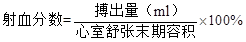

A.兴奋时Na+比K+更易穿透过细胞膜
B.安静时K+比Na+更易穿透过细胞膜
C.K+的不断外流和Na+的不断内流
D.膜上载体和通道蛋白的共同作用
E.膜上Na+−K+依赖式ATP酶的活动
参考答案：E
题目解析：钠泵是镶嵌在细胞膜一种特殊蛋白质，具有ATP酶的活性，当细胞内Na<sup>+</sup>增加或细胞膜外K<sup>+</sup>增加时被激活，每消耗1分子ATP，向胞内运载2个分子K<sup>+</sup>，同时向胞外排出3个分子的Na<sup>+</sup>。它的活动使Na<sup>+</sup>、K<sup>+</sup>在细胞内外不均衡分布。
A.纤维蛋白原
B.α1−球蛋白
C.α2−球蛋白
D.清（白）蛋白
E.γ−球蛋白
参考答案：D
题目解析：血浆胶体渗透压主要由血浆蛋白构成,其中白蛋白含量多、分子量相对较小，是构成血浆胶体渗透压的主要成分。血浆胶体渗透压对于调节血管内外水分的交换，维持血容量具有重要的作用。
A.主动转运
B.入胞作用
C.易化扩散
D.单纯扩散
E.出胞作用
题目解析：出胞是指细胞需要外排的大分子，先在细胞内形成囊泡，囊泡移动到细胞膜处，与细胞膜结合，将大分子排出细胞的过程。例如胰腺细胞分泌酶原颗粒（蛋白质），神经末梢释放神经递质等。
A.等容收缩期开始时
B.快速充盈期开始时
C.等容舒张期开始时
D.快速射血期开始时
E.减慢充盈期开始时
参考答案：C
题目解析：半月瓣（主动脉瓣和肺动脉瓣）在快速射血期开始时开启，在等容舒张期开始时关闭。
A.叩击股四头肌腱引起小腿前伸
B.异物接触眼球引起眼睑闭合
C.咀嚼、吞咽食物引起胃液分泌
D.强光刺激视网膜引起瞳孔缩小
E.闻到食物香味引起唾液分泌
题目解析：非条件反射包括缩手反射、膝跳反射、眨眼反射、排尿反射等，反射活动由大脑皮层以下的各个中枢即可完成，不需要后天的训练就能引起反射性反应；条件反射是后天获得的经学习才会的反射，是通过后天学习或训练形成的反射活动。
A.入胞作用
B.易化扩散
C.单纯扩散
D.主动转运
参考答案：B
题目解析：易化扩散是指非脂溶性物质（亲水性物质）如氨基酸、糖和离子等借助细胞膜上的膜蛋白（载体或通道）的帮助顺浓度梯度或顺电化学浓度梯度通过细胞膜，该过程不消耗ATP。
A.包括黏膜下神经丛和肌间神经丛
B.不受外来自主神经系统的控制
C.递质仅是乙酰胆碱或去甲肾上腺素
D.仅有运动功能，而无感觉功能
E.含大量神经纤维，但神经元不多
参考答案：A
题目解析：胃肠道的内在神经是指消化道壁内的壁内神经丛，包括肌间神经丛和粘膜下神经丛，有感觉、中间和运动神经元，彼此交织成网。内在神经丛释放的递质有ACh、NE、VIP、5-HT、N0、CCK、GABA等。粘膜下神经丛主要调节消化道腺体和内分泌细胞的分泌，肠内物质的吸收及局部血流的控制；肌间神经丛主要支配平滑肌细胞，参与对消化道运动的控制。
A.颈动脉窦内压力增高
B.心交感中枢紧张性增高
C.静脉回心血量减少
D.心室舒张末期容积减小
E.心迷走中枢紧张性增高
题目解析：调节心输出量的因素为心脏的射血能力和静脉回流量。颈动脉窦内压力增高通过减压反射兴奋迷走神经使心脏射血能力下降；静脉回心血量减少、心室舒张末期容积减小直接减小心输出量；心交感中枢紧张性增高使心脏收缩能力增强，增加心输出量。
A.窦神经传入冲动减少
B.心交感中枢兴奋
C.心迷走中枢兴奋
D.交感缩血管中枢兴奋
E.心迷走中枢抑制
题目解析：减压反射是指颈动脉窦和主动脉弓压力感受器受到牵张刺激（如动脉血压突然升高）而兴奋发放神经冲动，分别沿窦神经和主动脉神经传至延髓心血管中枢，使心迷走紧张加强，其效应是心率减慢，血管舒张，外周阻力减小，从而使血压降低。
A.胆盐可促进蛋白的消化和吸收
B.消化期只有胆囊胆汁排入小肠
C.胆汁中含有脂肪消化酶
D.胆汁中与消化有关的成分是胆盐
E.非消化期无胆汁分泌
题目解析：胆汁中含有胆汁酸、磷脂、胆固醇、钠、钾、钙、磷酸盐和碳酸盐等，以及少量蛋白质等成分，不含消化酶；胆汁中的胆盐利于消化和吸收脂肪，促进维生素A、D、E、K吸收；肝细胞产生的胆汁和胆囊胆汁都可进入十二指肠；非消化期胆汁也分泌。
A.抑制激肽系统
B.激活因子Ⅻ
C.激活补体系统
D.水解凝血酶及因子V、Ⅶ
E.水解纤维蛋白原和纤维蛋白
题目解析：纤溶酶是指能专一降解纤维蛋白凝聚体的蛋白水解酶，是纤溶系统中的一个重要组份。纤溶酶的作用为水解纤维蛋白原和纤维蛋白，使体内纤维蛋白原的水平降低，从而避免纤维蛋白的过多凝聚。
A.刺激颈动脉体化学感受器
B.刺激中枢化学感受器转而兴奋呼吸中枢
C.刺激颈动脉窦压力感受器
D.直接刺激呼吸中枢
E.刺激主动脉体化学感受器
题目解析：PaCO<sub>2</sub>升高主要通过对延髓中枢化学感受器的作用，使呼吸加深加快；PaO<sub>2</sub>降低主要通过刺激外周化学感受器引起呼吸加快加深。
A.心脏做功
B.每分输出量
C.射血分数
D.心指数
E.心力贮备
题目解析：心理贮备指心脏适应机体代谢的需要而增加心输出量的能力，心力储备量的大小是反映心脏的健康程度的最好指标。心脏做功、每分输出量、射血分数及心指数虽也能反映心脏功能，但只能表示即刻心脏功能，不能反映心脏功能潜力大小。
A.兴奋传到神经末梢
B.前膜内侧负电位的大小
C.Ca2+进入突触前末梢
D.前膜内轴浆黏度的高低
E.突触前膜发生去极化
题目解析：动作电位传导至轴突末梢时，引起膜上钙离子通道开放，膜外钙离子通过钙通道流入胞内，使突触囊泡移向突触前膜从而将递质释放至突出间隙，可见引起递质释放的关键因素为Ca<sup>2+</sup>进入突触前末梢。
A.肺泡的表面张力
B.肺内压与大气压之差
C.胸膜腔内压保持负压
D.呼吸肌的舒缩活动
E.肺的扩张和回缩
题目解析：呼吸肌的舒缩活动通过牵拉胸廓形成肺内压与外界大气的压力差，从而引起呼吸运动。故呼吸肌的舒缩活动是肺通气的原动力，肺内压与大气压之差为肺通气的直接动力。
A.–70mV
B.–60mV
C.–90mV
D.–110mV
E.–50mV
题目解析：各种细胞的静息电位大小不一，哺乳动物的神经细胞的静息电位为-70mV，骨骼肌细胞为-90mV，人的红细胞为-10mV。
A.疼痛刺激
B.血浆晶体渗透压增高
C.血浆胶体渗透压增高
D.动脉血压降低
E.循环血量减少
题目解析：调节抗利尿激素的主要因素是血浆晶体渗透压和循环血量、动脉血压。其中血浆晶体渗透压增高是引起抗利尿激素释放最敏感的因素。
A.具有上行唤醒作用的功能系统
B.与感觉无关的中枢神经系统
C.单突触接替的系统
D.阻止巴比妥类药物发挥作用的系统
E.通过丘脑特异投射而发挥作用的系统
题目解析：脑干网状结构上行激动系统是感觉传导通路上行经脑干网状结构时，发出侧支多次换神经元，经多突触联系形成的上行系统。其上行冲动在丘脑换元后通过非特异性投射，弥散地投射到大脑皮层广泛区域，使大脑皮层处于兴奋状态以维持觉醒。
A.心肌呈全或无式收缩
B.肌质网不发达，Ca2+储存少
C.有效不应期特别长
D.有自律性，会自动节律收缩
E.心肌是功能上的合胞体
题目解析：当肌肉接受一连串彼此间隔时间很短的连续兴奋冲动时，后一个刺激都落在由前一刺激所引起的收缩尚未结束之前，就又引起下一次收缩，肌肉发生持续性缩短状态，称强直收缩。心肌细胞由于有效不应期特别长，因而在一次收缩尚未结束时给予刺激并不能使心肌发生再次收缩（因处于有效不应期），故不会产生强直收缩。
A.血中血管升压素增多
B.交感神经兴奋
C.迷走神经兴奋
D.血管的自身调节
E.血中血管紧张素Ⅱ增多
题目解析：急性失血时，由于体内循环血容量减少，使颈动脉窦和主动脉弓的压力感受器受到的牵张刺激减小，即减压反射的传入神经刺激减少，从而使迷走神经兴奋性降低，交感神经兴奋性升高。减压反射是机体动脉血压快速变化时的重要调节机制。
A.心房进入心室的血量
B.左、右心室排出的总血液量
C.每分钟左心室所泵出的血量
D.心脏每搏动一次所泵出的血量
E.每分钟两心房进入心室的血量
题目解析：心排血量（CO）是临床上了解循环功能最重要的基本指标之一，CO指心脏每分钟将血液泵至周围循环的血量,即每分钟左心室所泵出的血量，可反映整个循环系统的功能状况。
A.铯
B.河豚毒
C.Mg2+
D.四乙基铵
E.异搏定（维拉帕米）
题目解析：维拉帕米是钙通道阻滞剂，可以阻断心肌细胞的慢通道；河豚毒特异性阻断钠通道；四乙基铵阻断钾通道；哇巴因是钠泵阻断剂。
A.晚间
B.中午
C.下午
D.清晨
E.慢波睡眠
题目解析：生长激素呈脉冲式分泌，它的分泌受下丘脑产生的生长激素释放素的调节，还受性别、年龄和昼夜节律的影响，睡眠状态下慢波睡眠时分泌明显增加，是一天分泌中的最高峰。
A.甲状腺激素分泌过多
B.胰岛素分泌不足
C.肾上腺糖皮质激素分泌过多
D.肾上腺素分泌过多
E.生长素分泌过多
题目解析：肾上腺糖皮质激素分泌过多会导致皮质功能亢进综合征，表现为满月脸、水牛背、高血压、多毛、糖尿、皮肤变薄等，为糖皮质激素影响代谢，使体内脂肪重新分布所致。
A.心排血量／体重
B.心排血量／体表面积
C.心排血量／心室舒张末期容积
D.每搏输出量／体重
E.每搏输出量／体表面积
题目解析：心指数是以每平方米体表面积计算的心输出量，即为（心率×每搏输出量）/体表面积，是比较不同个体之间心脏泵血功能的较好指标。
A.维持正常性欲
B.抑制蛋白质合成
C.促进骨骼生长
D.促进副性征的出现
E.促进精子生长发育
题目解析：睾酮的功能有维持正常性欲，促进蛋白质合成、促进骨骼生长，促进副性征的出现，促进精子生长发育，刺激生殖器官的生长和副性征的出现，维持生精作用，影响水、盐代谢，有利于水、钠在体内的保留等等。
A.翻正反射
B.对侧伸肌反射
C.腱反射
D.肌紧张反射
E.屈肌反射
题目解析：肌紧张指缓慢持续牵拉肌肉（肌腱）时，所引起的牵张反射，表现为受牵拉的肌肉处于持续的轻度收缩状态，但不表现为明显的动作。是维持躯体姿势的最基本方式。
A.胰液
B.唾液
C.胆汁
D.胃液
E.小肠液
题目解析：胆汁中含有胆汁酸、磷脂、胆固醇、钠、钾、钙、磷酸盐和碳酸盐等，以及少量蛋白质等成分，不含消化酶；胆汁中的胆盐利于消化和吸收脂肪，促进维生素A、D、E、K吸收。
A.脂肪
B.混合食物
C.蛋白质
D.维生素
E.糖类
题目解析：人体由于摄入食物而引起能量代谢额外增高的现象叫做食物的特殊动力作用。各种营养素的特殊动力作用强弱不同，蛋白质最强，其次是碳水化合物，脂肪最弱。
A.近球小管
B.髓袢
C.远球小管
D.集合管
E.各段肾小管
题目解析：葡萄糖和氨基酸100%在近球小管重吸收。近球小管对葡萄糖的重吸收能力是有限的，当血浆葡萄糖浓度超过肾糖阈时即可出现尿糖。
A.磷酸二酯酶
B.胆碱酯酶
C.ATP酶
D.腺苷酸环化酶
E.单胺氧化酶
题目解析：胆碱酯酶在神经—骨骼肌接头处消除乙酰胆碱，从而终止乙酰胆碱的递质兴奋作用；有机磷中毒时由于胆碱酯酶失活，使乙酰胆碱不能及时消除，导致乙酰胆碱对骨骼肌的持续兴奋作用，临床表现为肌肉颤栗。
A.静脉回心血量减少
B.射血分数降低
C.后负荷增大
D.心肌收缩能力降低
E.心率减慢
题目解析：心肌收缩的异常调节指回心血量增加，引起左心室舒张末期压力增加，导致心肌收缩能力加强、血压上升；同理，回心血量减少，引起左心室舒张末期压力降低，导致心肌收缩能力降低、血压降低。心肌收缩的异常调节是心脏在静脉回心血量短时间变化时的自身调节机制。
A.肾小管K+–Na+交换减弱
B.近球小管K+的吸收增加
C.肾小管Na+重吸收减少
D.肾小管K+–H+交换增加
E.肾小球滤过率降低
题目解析：正常肾小管通过K<sup>+</sup>–Na<sup>+</sup>交换重吸收Na<sup>+</sup>并排出K<sup>+</sup>，代谢性酸中毒时肾小管上皮细胞内氢离子增多，使H<sup>+</sup>–Na<sup>+</sup>增多，K<sup>+</sup>–Na<sup>+</sup>交换减弱，机体排钾减少，导致高钾血症。
A.脑水肿
B.疼痛性休克
C.脊休克
D.脊髓水肿
E.脑震荡
题目解析：脊髓突然横断失去与高位中枢的联系，断面以下脊髓暂时丧失反射活动能力进入无反应状态，这种现象称为脊休克。脊休克表现为断面下所有反射均暂时消失，发汗、排尿、排便无法完成，同时骨髓肌紧张性降低，血压下降。反射可恢复，但随意运动永久消失。
A.突触性化学传递
B.自分泌
C.近距分泌
D.旁分泌
E.非突触性化学传递
题目解析：非突触性化学传递的特点：①不存在突触前膜与后膜的特化结构；②不存在一对一的支配关系；③膨体与其他神经元或效应细胞之间的距离长；④递质弥散的距离远,因此传递所需的时间长。其代表为肾上腺素能神经元的轴突末梢分支上大量的曲张体。
A.增强作用
B.协同作用
C.致敏作用
D.允许作用
E.辅助作用
题目解析：激素的允许作用是指有些激素并不能直接作用于器官、组织或细胞而产生生理作用，但是能为另一种激素的生理学效应创造了条件（即对另一激素起支持作用）。如糖皮质激素本身对血管平滑肌没有收缩作用，但是只有在糖皮质激素存在的情况下，儿茶酚胺才能发挥它对心血管的作用；孕激素的生物作用需要雌激素的存在等。
A.单纯扩散
C.主动转运
D.入胞作用
题目解析：单纯扩散是物质通过细胞膜的最简单的形式，常见的以单纯扩散方式进出细胞膜的物质有O<sub>2</sub>、CO<sub>2</sub>、H<sub>2</sub>O、甘油，乙醇、苯、尿素、NH<sub>3</sub>、N<sub>2</sub>等。
B.单纯扩散
E.吞噬
题目解析：葡萄糖进入红细胞属于易化扩散；葡萄糖进入肠粘膜细胞属于继发性主动转运。
C.易化扩散和主动转运
E.主动转运和单纯扩散
题目解析：Na<sup>+</sup>跨膜转运的方式分为两种，一种如钠通道，属于易化扩散，不消耗能量；一种如钠泵，属于主动转运，需耗费能量逆浓度差进行。
D.出胞
E.渗透
题目解析：细胞需要外排的大分子，先在细胞内形成囊泡，囊泡移动到细胞膜处，与细胞膜结合，将大分子排出细胞，这种现象叫做出胞。常见的出胞有细胞分泌蛋白至胞外、运动神经末梢释放乙酰胆碱等。
A.膜两侧该物质的浓度达到平衡
B.转运系统的转运能力达到最大限度
C.转运蛋白的特异性
D.膜的通透性降低
E.竞争性抑制
题目解析：易化扩散虽不耗费能量，但需要蛋白质通道或蛋白载体，由于蛋白质通道和蛋白载体的数目限制，使得易化扩散会出现饱和的现象，当蛋白质通道或蛋白载体全部处于工作状态时，易化扩散即达到饱和状态，跨膜移动的物质浓度再增加其转运速率不会提高。
A.膜在安静时对K+通透性大
B.膜在兴奋时对Na+通透性增加
C.Na+、K+易化扩散的结果
D.细胞膜上Na+-K+泵的作用
E.细胞膜上ATP的作用
题目解析：细胞膜上的Na<sup>+</sup>-K<sup>+</sup>泵简称钠泵，其每消耗1分子ATP，会向胞内转运2分子K<sup>+</sup>，同时向胞外转运3分子Na<sup>+</sup>，钠泵的运转形成细胞膜内外正常的Na<sup>+</sup>和K<sup>+</sup>浓度差。
A.顺浓度差转运
B.温度升高时扩散量增加
C.需要“膜蛋白”的帮助
D.不消耗能量
E.是脂溶性物质跨膜转运的主要方式
题目解析：单纯扩散和易化扩散都不需要消耗能量，都是顺浓度梯度进行，但单纯扩散直接通过细胞膜，易化扩散则需要借助细胞膜上特异的载体蛋白或通道蛋白。
A.钠泵能逆着浓度差将进入细胞内的Na+移出胞外
B.能顺浓度差将细胞外K+转入胞内
C.由于从膜内移出Na+，可以防止水分子进入细胞
D.钠泵活动造成细胞内高K+，使许多代谢活动得以进行
E.钠泵活动造成膜两侧离子势能贮备
题目解析：钠泵每消耗1分子ATP，向胞外运转3分子钠离子，向胞内运转2分子钾离子；钠离子与钾离子的转运都是逆浓度进行的，需消耗能量。
A.活组织或细胞对外界刺激发生反应的能力
B.细胞对外界刺激发生反应的过程
C.细胞受刺激时产生动作电位的能力
D.细胞受刺激后产生动作电位的过程
E.动作电位即兴奋性
题目解析：一般来说，细胞对刺激发生反应的过程，称为兴奋，而在现代生理学中，兴奋被看做是动作电位的同义语或动作电位的产生过程。并不是所有的细胞接受刺激后都能产生动作电位的。
A.动作电位
B.局部电位
C.收缩
D.分泌
E.后电位
题目解析：可兴奋细胞受到阈刺激强度以上的刺激时，便会产生兴奋，表现为在细胞膜产生动作电位。
A.阈电位
B.时值
C.阈强度
D.刺激强度对时间的变化率
E.刺激的频率
题目解析：通常将能使细胞产生兴奋的最低刺激强度称为阈强度，也叫做阈值。阈值是表示细胞兴奋性的指标，阈值越大，说明使细胞产生兴奋所需刺激强度越大，即越难使细胞兴奋，细胞的兴奋性就越低。
A.用最小刺激强度，刚刚引起组织兴奋的最短作用时间
B.保持一定刺激强度不变，能引起组织兴奋的最适作用时间
C.刺激时间和强度—时间变化率不变，引起组织发生兴奋的最小刺激强度
D.刺激时间不限，能引起组织兴奋的最适宜刺激强度
E.刺激时间不限，能引起组织最大兴奋的最小刺激强度
题目解析：兴奋性是指细胞在受到刺激时产生兴奋的能力。衡量心肌兴奋性的高低，可以用刺激阈值作为指标，阈值高则表示兴奋性低，阈值低则表示兴奋性高。
A.相对不应期—绝对不应期—超常期—低常期
B.绝对不应期—相对不应期—低常期—超常期
C.绝对不应期—低常期—相对不应期—超常期
D.绝对不应期—相对不应期—超常期—低常期
E.绝对不应期—超常期—低常期一相对不应期
题目解析：神经细胞接受一次阈上刺激后，随即产生动作电位，在动作电位峰电位时期，无论给予细胞多大刺激都不会使细胞再次产生兴奋，这一段时期称为绝对不应期；此后部分钠通道开放，当给予细胞大于阈值的刺激时，可使细胞产生兴奋，称为相对不应期；之后细胞处于短暂的超常期，此期给予细胞阈下刺激即可使细胞产生兴奋；最后经历低常期，细胞兴奋性低于正常。
A.零
B.无限大
C.小于正常
D.大手正常
E.等于正常
题目解析：在动作电位峰电位时期，无论给予细胞多大刺激都不会使细胞再次产生兴奋，这一段时期称为绝对不应期，绝对不应期的细胞兴奋性为零，阈值为无穷大。
A.动作电位是细胞受刺激时出现的快速而不可逆的电位变化
B.在动作电位的去极相，膜电位由内正外负变为内负外正
C.动作电位的大小随刺激强度和传导距离而改变
D.动作电位的大小不随刺激强度和传导距离而改变
E.不同的细胞，动作电位幅值都相同
题目解析：动作电位具有“全或无”特性，即刺激强度只要在阈强度以下，细胞都不会产生兴奋；刺激强度只要达到阈强度，即会产生动作电位，且在细胞膜上“无衰减”传导，即动作电位强度不随传导距离的增加而衰减。
A.不受细胞外Na+浓度的影响
B.不受细胞外K+浓度的影响
C.与刺激强度和传导距离无关
D.与局部电位无关
E.与静息电位无关
题目解析：动作电位具有“全或无”特性，即刺激强度只要在阈强度以下，细胞都不会产生兴奋；刺激强度只要达到阈强度，即会产生动作电位，，且在细胞膜上“无衰减”传导，即动作电位强度不随传导距离的增加而衰减。
A.动作电位的产生是“全或无”的
B.动作电位的传导是“全或无”的
C.动作电位产生时有绝对不应期存在
D.去极相内流的Na+来不及回到细胞外
E.复极相外流的K+来不及回到细胞内
题目解析：由于动作电位的绝对不应期的存在，细胞在此期的兴奋性为零，使得在此期施加的刺激无效，不能使细胞产生任何反应，因此刺激频率的增加不会使动作电位发生融合。
A.细胞内高K+和膜对K+有通透性
B.细胞内高Na+和膜对Na+有通透性
C.细胞内高Na+和膜对K+有通透性
D.细胞外高Na+和膜对K+有通透性
E.细胞外高K+和膜对K+有通透性
题目解析：细胞内钾离子的浓度明显高于膜外，而钠离子浓度比膜外低。静息时，由于膜主要对钾离子有通透性，造成钾离子外流，使膜外阳离子浓度高于膜内，这就是大多数细胞产生和维持静息电位的主要原因。
A.膜两侧K+浓度梯度为零
B.膜外K+浓度大于膜内
C.膜两侧电位梯度为零
D.膜内较膜外相对较正
E.K+净外流为零
题目解析：通常把细胞内外某离子的电化学电位等于零时的膜电位，称为该离子的平衡电位。即某离子处于平衡电位时，该离子在细胞膜净外流为零。
A.K+
B.Na+
C.Cl－
D.Ca2+
E.Mg2+
题目解析：神经细胞在静息状态下，对钾离子高度通透，钠离子通透性低；在神经细胞去极相时，由于阈强度使细胞膜钠通道短时间内大量开放，细胞膜对钠离子的通透性大于钾离子的通透性，从而使内流电流急剧增加，产生动作电位。
A.Na+
B.K+
题目解析：由于在静息状态下细胞膜对钾离子的高度通透且胞内高浓度钾离子存在，使得细胞能够产生和维持静息电位。
A.均增大
B.均减小
C.前者增大后者减小
D.前者减小后者增大
E.前者减小后者不变
题目解析：正常细胞静息电位为细胞膜内负外正；人工增加离体神经纤维浸浴液中的K<sup>+</sup>浓度，细胞外液K+浓度升高，细胞内外的K+浓度差减小，则驱使K+外流的驱动力下降，使K+平衡电位的负值减小，导致静息电位绝对值减小。动作电位的幅值是指从静息电位到去极化顶点的距离。静息电位绝对值减小，故动作电位的幅度也减小。
A.去极化
B.超极化
C.复极化
D.反极化
E.极化
题目解析：动作电位状态称为极化；静息电位增大称为超极化；静息电位减小称为去极化；去极化至零电位后膜电位如进一步变为正值，则称为反极化，膜电位高于零电位的部分称为超射；细胞膜去极化后再向静息电位方向恢复的过程称为复极化。
A.相对不应期
B.绝对不应期
C.超常期
D.低常期
E.绝对不应期和相对不应期之和
题目解析：由于在绝对不应期细胞对任何强度的刺激都无反应，故在产生峰电位后要使细胞再次兴奋施加刺激必须在绝对不应期之后进行。
A.呈“全或无”现象，非递减性传导，不能总和
B.非“全或无”，电紧张性扩布，可总和
C.非“全或无”，递减性传导，可总和
D.呈“全或无”现象，非递减性传导，可总和
E.非“全或无”，有不应期，可总和
题目解析：“局部兴奋”即局部电位，其特点是可产生叠加，随传播距离的增大电位强度减小，呈非“全或无”。
A.不引起任何反应
B.引起电紧张扩布的局部兴奋
C.引起衰减传导的局部电位
D.引起可传导的局部电位
E.引起可传导的动作电位
题目解析：动作电位的产生需要刺激强度达到阈强度以上；若给予阈下刺激，则只会产生局部电位，即电紧张扩布的“局部兴奋”（注意“局部兴奋”并非“兴奋”）。
A.使K+通道突然开放的临界膜电位
B.使K+通道突然关闭的临界膜电位
C.使Na+通道大量开放的临界膜电位
D.使Na+通道突然关闭的临界膜电位
E.使K+和Na+通道突然开放的临界膜电位
题目解析：阈刺激使细胞产生兴奋，细胞兴奋时细胞膜钠通道大量开放，动作电位产生，即阈电位是使Na<sup>+</sup>通道大量开放的临界膜电位。
A.动作电位沿细胞膜传导到整个细胞
B.传导方式是通过产生局部电流刺激未兴奋部位，使之也出现动作电位
C.在有髓纤维传导的速度比无髓纤维快
D.动作电位幅度随传导距离增加而减小
E.在有髓纤维是跳跃式传导
题目解析：细胞兴奋产生动作电位，动作电位呈“全或无”，其传导过程不衰减，不随距离的增加而减小。
A.对Na+、K+通透性增加，发生超极化
B.对Na+、K+通透性增加，发生去极化
C.仅对K+通透性增加，发生超极化
D.仅对Ca+通透性增加，发生去极化
E.对乙酰胆碱通透性增加，发生超极化
题目解析：神经-肌肉接头兴奋时，乙酰胆碱与受体结合，使终板膜上的阳离子通道开放，其对阳离子选择性较差，即钠、钾离子通透性均增加，阳离子内流产生去极化，局部电位综合叠加后在肌细胞膜产生动作电位，引起兴奋收缩。
A.Na+通道关闭
B.Ca2+通道开放
C.K+通道开放
D.Cl—通道开放
E.Cl—通道关闭
题目解析：当神经冲动到达运动神经末梢时，接头前膜的Ca<sup>2+</sup>通道开放，Ca<sup>2+</sup>内流使得载有乙酰胆碱递质的囊泡向突触前膜方向移动。
B.Cl－
C.Ca2+
D.K+
题目解析：骨骼肌兴奋后，使胞外钙离子大量内流，胞质钙离子浓度升高，通过结合肌钙蛋白，引发肌纤维收缩蛋白产生收缩。
A.肾上腺素
B.去甲肾上腺素
C.乙酰胆碱
D.5-羟色胺
E.γ-氨基丁酸
题目解析：
A.电兴奋通过纵管传向肌细胞深部
B.纵管膜产生动作电位
C.纵管终末池对Ca2+的通透性增加
D.终末池中的Ca2+逆浓度差进入肌浆
E.ACh是兴奋-收缩偶联的关键
题目解析：静息状态下的骨骼肌细胞胞浆内钙离子浓度低，触发骨骼肌细胞内蛋白产生收缩需要胞浆高浓度钙离子的存在，其主要依靠终末池中的Ca<sup>2+</sup>逆浓度差进入肌浆。
A.5%
B.8%
C.10%
D.12%
E.15%
题目解析：血量是指全身血液的总量。全身血液的大部分在心血管系统中快速循环流动，称为循环血量，小部分血液滞留在肝、肺、腹腔静脉及皮下静脉丛内，流动很慢，称为储存血量。在运动或大出血等情况下，储存血量可被动员释放出来，以补充循环血量。正常成人的血液总量约相当于体重的8%，即每公斤体重有80ml血液。
A.细胞内液理化性质保持不变
B.细胞外液理化性质保持不变
C.细胞内液的化学成分相对恒定
D.细胞外液的化学成分相对恒定
E.细胞外液的理化性质相对恒定
题目解析：内环境的各种物理、化学性质保持相对稳定，称为内环境的稳态。所谓保持相对稳定或稳态，是指在正常生理情况下内环境的各种理化性质只在很小的范围内发生变动。内环境是指机体细胞在体内的生存环境，即细胞外液。
A.4000ml
B.5000ml
C.6000ml
D.7000ml
E.8000ml
题目解析：正常成人的血液总量约相当于体重的8%，即每公斤体重有80ml血液。因此，体重为60公斤的人，血量应4.8L，约5L。
A.血液由血浆和血细胞组成
B.血浆中水分的含量约占90%
C.血浆中电解质含量与组织液基本相同
D.血浆中蛋白质浓度高于组织液
E.与抗凝剂混匀的血液待红细胞沉降后，上面的液体部分称为血清
题目解析：正常人体血液由血细胞和血浆组成，血浆经凝固除去其中纤维蛋白原后的淡黄色澄清液体，称之为血清。
A.与水相比，血液的粘滞性为4～5
B.全血的粘滞性主要决定于所含的红细胞数目
C.血浆的粘滞性主要决定于血浆蛋白质的含量
D.血流速度显著减慢时，血液粘滞性相对减小
E.血液粘滞性与血流阻力成正比
题目解析：血液粘滞性与血流速度呈反比关系，即血流速度越快，血液粘滞度越小，相反则越大。
A.KHCO3／H2CO3
B.K2HPO4／KH2PO4
C.NaHCO3／H2CO3
D.Na2HPO4／NaH2PO4
E.蛋白质-Na／蛋白质
题目解析：血浆内的缓冲物质包括：NaHCO<sub>3</sub>／H<sub>2</sub>CO<sub>3</sub>、蛋白质钠盐／蛋白质和Na<sub>2</sub>HPO<sub>4</sub>／NaH<sub>2</sub>PO<sub>4</sub>三个主要缓冲对，其中以NaHCO<sub>3</sub>／H<sub>2</sub>cO，最为重要。
A.血浆的晶体渗透压与组织液的晶体渗透压基本相等
B.血浆的胶体渗透压高于组织液的胶体渗透压
C.血浆晶体渗透压对保持血细胞内外水平衡极为重要
D.血浆胶体渗透压对于血管内外的水平衡很重要
E.血浆蛋白质的分子量大于晶体物质，故血浆胶体渗透压大于晶体渗透压
题目解析：血浆渗透压分为胶体渗透压和晶体渗透压，晶体渗透压主要维持细胞内外水平衡，胶体渗透压主要维持血管内外水平衡；某渗透压的大小取决于该物质单位容积的分子数，即该物质的摩尔浓度，与分子量大小无关。血浆晶体渗透压远远大于胶体渗透压。
A.与血浆容积之比
B.与血管容积之比
C.在血液中所占重量百分比
D.在血液中所占的容积百分比
E.与白细胞容积之比
题目解析：血细胞在血液中所占的容积百分比称为血细胞比容。正常成年男性的血细胞比容为40%～50%，成年女性为37%～48%。
A.营养功能
B.运输功能
C.缓冲功能
D.免疫功能
E.排泄功能
题目解析：血浆蛋白的营养功能如单核细胞可吞噬完整的血浆蛋白直接进行水解；运输功能如血红蛋白运输氧气；缓冲功能：血浆蛋白多以负离子的形式缓冲血液pH值；免疫功能如各种免疫球蛋白。血浆蛋白无排泄功能。
A.500万／mL
B.500万／L
C.5.0×107／L
D.5.0×109／L
E.5.0×1012／L
题目解析：我国成年男性红细胞的数量为（4.0～5.5）×10<sup>12</sup>／L，女性为（3.5～5.0）×10<sup>12</sup>／L。
A.正常成年人总数是4000～10000／ml
B.中性粒细胞约占白细胞总数的60%
C.嗜酸性粒细胞约占白细胞总数的2%～4%
D.淋巴细胞约占白细胞总数的30%
E.单核细胞约占白细胞总数的4%～8%
题目解析：正常成年人血液中白细胞数为（4.0～10.0）×10<sup>9</sup>／L，其中中性粒细胞占50%～70%，嗜酸性粒细胞占0.5%一5%，嗜碱性粒细胞占0%～l%，单核细胞占3%～8%，淋巴细胞占20%～40%。
A.中性粒细胞可吞噬入侵的细菌
B.嗜碱性粒细胞能释放组胺，与过敏反应有关
C.嗜酸性粒细胞参与对蠕虫的免疫反应
D.淋巴细胞是机体内的主要免疫细胞
E.单核细胞可释放肝素
题目解析：激活了的单核—巨噬细胞也能合成、释放多种细胞因子，如集落刺激因子（CSF）、白介素（IL-1、IL-3、IL-6等）、肿瘤坏死因子（TNFα）、干扰素（INF-α、-β）等；释放肝素的细胞是肥大细胞。
A.50×109／L
B.100×109／L
C.150×109／L
D.200×109／L
E.250×109／L
题目解析：正常成人血液中的血小板数量为（100～300）×10<sup>9</sup>／L。当血小板数目低于50×10<sup>9</sup>／L时会出现出血倾向。
A.在损伤处粘附和聚集，形成止血栓
B.血管壁的前列环素（PGI2）有抑制血小板聚集的作用
C.血小板的血栓素A2（TXA2）有加强血小板聚集的作用
D.血小板数目低于50000／µ1时会产生出血倾向
E.血小板内不含有凝血因子
题目解析：活化的血小板可为血液凝固过程中凝血因子的激活提供磷脂表面，血小板表面结合有多种凝血因子，血小板还可释放纤维蛋白原等凝血因子，从而大大加速凝血过程。
A.血小板不易聚集
B.血小板释放的血管活性物质量不足
C.血小板不能修复和保持血管内皮细胞完整性
D.影响了血管收缩功能
E.影响了血凝块的回缩
题目解析：血小板有助于维持血管壁的完整性。当血小板数降至50×10<sup>9</sup>／L时，患者的毛细血管脆性增高，微小的创伤或仅血压升高即可使之破裂而出现小的出血点。在血小板减少时，输入新鲜血小板后，可在电镜下观察到血小板粘附并融合到血管内皮中，从而维持血管内皮的完整。此外，血小板还可释放血小板源生长因子，促进血管内皮细胞、平滑肌细胞及成纤维细胞的增殖，也有利于受损血管的修复。
A.红细胞膜上受体的类型
B.红细胞膜上特异性的凝集素类型
C.红细胞膜上特异性凝集原类型
D.血浆中凝集素的类型
E.血浆中凝集原的类型
题目解析：血型通常是指红细胞膜上特异性抗原的类型。若将血型不相容的两个人的血液滴加在玻片上并使之混合，则红细胞可凝集成簇，称为红细胞凝集
A.AB型血的血清中含有抗A和抗B凝集素
B.AB型血的红细胞上有A凝集原和B凝集原
C.A型血的血清中有抗B凝集素
D.B型血的血清中有抗A凝集素
E.O型血的红细胞上不含凝集原
题目解析：AB型血的红细胞膜含有A、B抗原，血清不含抗A和抗B凝集素；A型血的红细胞膜只含有A抗原，血清只含抗B凝集素；B型血的红细胞膜只含有B抗原，血清只含抗A凝集素；O型血的红细胞膜A、B抗原均没有，血清含抗A和抗B凝集素。
A.红细胞不被受血者红细胞所凝集
B.红细胞不被受血者血浆所凝集
C.红细胞不发生叠连
D.血浆不使受血者血浆发生凝固
E.血浆不使受血者红细胞凝集
题目解析：输血中主要需避免的是供血者的红细胞被受血者的血清相应抗体攻击，即供血者红细胞不被受血者血浆所凝集。
A.ABO血型相符者输血前仍需做交叉配血
B.O型血可少量、缓慢输给其他血型者
C.AB型者可少量、缓慢接受其他血型血
D.Rh阳性者可接受Rh阴性的血液
E.父母的血可直接输给子女
题目解析：父母的血可直接输给子女的说法是完全错误的，父母和子女之间进行输血仍需要经过严格的交叉配血后才能进行。
A.心室收缩期比心室舒张期长
B.占时间最长的是减慢射血期
C.房、室有共同收缩的时期
D.房、室有共同舒张的时期
E.心率增快时，心缩期与心舒期等比例缩短
题目解析：在一个心动周期中，左、右心房首先收缩，持续约0.1s，继而心房舒张，持续约0.7s。当心房收缩时，心室处于舒张期，心房进入舒张期后不久，心室开始收缩，持续约0.3s，随后进入舒张期，占时约0.5s。心室舒张的前0.4s期间，心房也处于舒张期，这一时期称为全心舒张期。
A.左心室压力升高速度最快的是等容收缩期
B.房室瓣开放见于等容舒张期末
C.主动脉瓣关闭见于等容舒张期开始
D.快速射血期末左室内压力最高
E.心室充盈主要靠心房收缩的挤压作用
题目解析：心室充盈主要依靠心室舒张造成负压对心房的“抽吸”作用。
A.心输出量是指每分钟由左、右心室射出血量之和
B.健康成年男性静息状态下为4～6L／min
C.左、右心室的心输出量基本相等
D.由平卧转为站立位时减少
E.心率超过180次／分时减少
题目解析：一侧心室每分钟射出的血液量，称为每分心输出量，简称心输出量。心输出量等于心率与搏出量的乘积。左右两心室的心输出量基本相等。
A.收缩末期容积或压力
B.舒张末期容积或压力
C.等容收缩期容积或压力
D.等容舒张期容积或压力
E.舒张末期动脉压
题目解析：心室肌前负荷是指肌肉收缩前所负载的负荷。心室肌的前负荷是由心室舒张末期的血液充盈量决定的，即心室舒张末期容积相当于心室的前负荷。由于测量心室内压比测定心室容积方便，且心室舒张末期容积与心室舒张末期压力在一定范围内具有良好的相关性，故在实践中常用心室舒张末期压力来反映前负荷。
A.心房压力
B.快速射血期心室内压
C.减慢射血期心室内压
D.等容收缩期初心室内压
E.大动脉血压
题目解析：后负荷是指肌肉开始收缩时才遇到的负荷。对心室而言，大动脉压起着后负荷的作用。因此，动脉压的变化可影响心室肌的收缩，从而影响搏出量。
A.心肌初长度
B.肌小节的初长度
C.横桥联结的数目
D.心脏收缩能力
E.心室舒张末期容积
题目解析：心肌的等长调节通过改变心脏收缩能力来调节心脏的泵血功能；心脏的异长调节通过改变心肌初长度来调节心脏的泵血功能。
A.平均动脉压
B.心率贮备
C.心力贮备
D.心室舒张末期容积
E.心室收缩末期容积
题目解析：通过改变心肌细胞初长度而引起心肌收缩强度改变的调节，称为异长调节。异长调节最常见为回心血量增加，心室前负荷增加，导致心室舒张末期容积增加，心肌初长度增加，最终通过异长调节使心脏收缩强度增加。
A.Na+内流，Cl-外流
B.Na+内流，K+外流
C.Na+内流，Cl-内流
D.Ca2+内流，K+外流
E.K+内流，Ca2+外流
题目解析：平台期的形成是由于该期间外向电流（K<sup>+</sup>外流）和内向电流（主要是Ca<sup>2+</sup>内流）同时存在。在平台期的初期，外向电流和内向电流二者处于平衡状态；随后，内向电流逐渐减弱，外向电流逐渐增强，总的结果是出现一种随时间推移而逐渐增强的微弱的净外向电流，导致膜电位的缓慢复极化。
A.收缩期开始
B.收缩期中间
C.收缩期末
D.舒张期早期
E.舒张期结束
题目解析：从心室肌细胞动作电位0期开始到3期膜电位恢复到-60mV（相当于心室舒张期早期）这一段时间内，心肌不能产生新的动作电位，将这段时间称为有效不应期。
A.窦房结节律性兴奋延迟发放
B.窦房结节律性兴奋少发放一次
C.窦房结节律性兴奋传出速度减慢
D.期前收缩的有效不应期延长
E.窦房结的一次兴奋落在期前收缩的有效不应期中
题目解析：紧接期前兴奋之后的一次窦房结产生的兴奋传到心室时，恰好落在期前兴奋的有效不应期内，因而不能引起心室的兴奋和收缩，必须等到下一次窦房结的兴奋传到心室时才能发生。所以在期前收缩之后有较大的心室舒张期，称为代偿间歇。
A.心肌是功能上的合胞体
B.心肌肌浆网不发达，Ca2+贮存少
C.心肌的有效不应期长
D.心肌有自律性，会自动节律收缩
E.心肌呈“全或无”收缩
题目解析：从心室肌细胞动作电位0期开始到3期膜电位恢复到-60mV都为心肌的有效不应期，由于心肌的有效不应期较长，心肌在有效不应期内对任何刺激都不会再次产生动作电位，即不可能发生连续高频率的收缩（即强直收缩）。
A.静息电位仅为-70mV
B.阈电位较高
C.0期除极速度快
D.动作电位没有明显的平台期
E.4期自动除极速率快
题目解析：窦房结的自动节律性兴奋频率（即4期自动除极频率）高于其他潜在起搏点，故在潜在起搏点4期自动去极化尚未达到阈电位水平之前，它们已经受到从窦房结发出并依次传来的兴奋的激动作用而产生动作电位。由于这种抢先占领的作用，使潜在起搏点自身的自律性不能表现出来。
A.使心室肌不会产生完全强直收缩
B.增强心肌收缩力
C.使心室肌有效不应期延长
D.使心房、心室不会同时收缩
E.使左、右心室同步收缩
题目解析：房室交界区细胞的传导性很低，其中又以结区为最低（0.02m／s）。兴奋在房室交界区传导速度缓慢，因此兴奋由心房传至心室要经过房—室延搁。由于房—室延搁，使心室的收缩必定发生在心房收缩完毕之后，而不会发生心房和心室的收缩在时间上重叠的现象。这对于心室的充盈和射血是十分重要的。
A.反映心脏内兴奋产生、传导和恢复过程
B.P波代表两心房去极化过程
C.QRS波群代表两心室去极化过程
D.T波代表两心室复极化过程
E.P-R间期是由P波结束至QRS波开始之间的时程
题目解析：PR间期是指从P波起点到QRS波起点之间的时程，一般为0.12～0.20s。PR间期代表由窦房结产生的兴奋经由心房、房室交界和房室束到达心室并引起心室肌开始兴奋所需要的时间，故也称为房室传导时间。
A.心率
B.心音
C.心电图
D.射血分数
E.动脉血压
题目解析：搏出量占心室舒张末期容积的百分比，称为射血分数，即。射血分数可比搏出量更好地反映泵血功能。
A.收缩压为心缩期动脉血压最高值
B.舒张压为心舒期动脉血压最低值
C.脉压为收缩压与舒张压之差
D.平均压为收缩压与舒张压之平均值
E.生理情况下影响收缩压的主要因素为每搏输出量
题目解析：一个心动周期中每一瞬间动脉血压的平均值，称为平均动脉压。平均动脉压＝舒张压＋1/3脉压差。
A.心输出量
B.小动脉口径
C.大动脉弹性
D.血液粘滞性
E.血流速度
题目解析：如果心输出量不变而全身总外周阻力（主要为小动脉阻力，主要取决于口径）加大，则心舒期内血液流入毛细血管和静脉的速度减慢，心舒期末存留在主动脉内的血量增多，故舒张压升高。一般情况下，舒张压的高低主要反映外周阻力的大小。
A.收缩压和舒张压都升高
B.收缩压升高，舒张压降低
C.收缩压降低，舒张压升高
D.收缩压降低，舒张压不变
E.收缩压和舒张压变化都不大
题目解析：正常情况下由于大动脉弹性贮器血管的作用，一方面能使左心室的间断射血变为动脉内的连续血流，另一方面还能使每个心动周期中动脉血压的波动幅度远小于左心室内压的波动幅度。老年人的大动脉管壁硬化，顺应性减小，弹性贮器的功能受损，因此每个心动周期中动脉血压的波动幅度明显增大，即收缩压增大，舒张压减小，脉压增大。
A.阻力血管主要指小动脉和微动脉
B.容量血管指的是静脉
C.血液通过毛细血管时血压降落最大
D.血量分配比例最高的是静脉
E.大动脉具有弹性贮器功能
题目解析：在各段血管中，血压降落的幅度与该段血管对血流的阻力的大小成正比。在主动脉和大动脉段，血压降落较小。到小动脉段时，血流阻力增大，血压降落的幅度也变大。在体循环中，微动脉段的血流阻力最大，血压降落也最为显著。
A.是指胸腔大静脉和右心房的血压
B.正常值为0.4～1.2kPa（4～12cmH2O）
C.是反映心血管机能状态的指标
D.心射血功能减弱时降低
E.静脉输液过快时升高
A.（毛细血管血压+血浆胶体渗透压）－（组织液胶体渗透压+组织液静水压）
B.（毛细血管血压+组织液胶体渗透压）－（血浆胶体渗透压+组织液静水压）
C.（毛细血管血压+组织液静水压）－（血浆胶体渗透压+组织液胶体渗透压）
D.（血浆胶体渗透压+组织液胶体渗透压）－毛细血管血压
E.血浆胶体渗透压－（毛细血管血压+组织液静水压）
A.节后纤维释放的递质是去甲肾上腺素
B.可导致心率加快
C.可导致房室交界的传导加快
D.可导致心房和心室肌收缩力加强
E.α肾上腺素受体可阻断其作用
A.大多数血管受交感和副交感神经双重支配
B.安静状态下，交感缩血管纤维有紧张性活动
C.去甲肾上腺素与α受体结合能力较与β受体结合的能力强
D.皮肤血管中缩血管纤维分布最密
E.动脉中缩血管纤维密度高于静脉
A.动脉压力感受器直接感受血压的变化
B.反射中枢在延髓
C.在血压发生突然变化时对血压进行快速调节
D.在动脉血压的长期调节中不重要
E.是一种负反馈调节机制
A.心迷走紧张减弱
B.心交感紧张加强
C.交感缩血管紧张减弱
D.心率加快
E.动脉血压升高
A.皮肤和肌肉的小动脉舒张
B.脑和心脏的血管收缩
C.循环血液中儿茶酚胺减少
D.肾脏排出Na+增多
E.外周阻力增加
A.在心肌收缩加强时增多
B.占心输出量的4%～5%
C.动脉舒张压升高时增多
D.心率加快、心舒期缩短时减少
E.与心肌代谢水平成正比
A.低氧本身
B.氢离子
C.乳酸
D.腺苷
E.前列腺素
A.呼吸运动是肺通气的原动力
B.肺内压和大气压之间的压力差是气体进出肺的直接动力
C.安静时正常成人呼吸频率为20～25次／分
D.平静呼吸时吸气是主动的，呼气是被动的
E.用力呼吸时吸气和呼气都是主动的
A.肺的舒缩运动
B.肺的弹性回缩
C.呼吸肌的舒缩运动
D.胸内压的周期性变化
E.肺内压和胸内压之差
A.大气压－非弹性阻力
B.大气压－弹性阻力
C.大气压＋弹性阻力
D.大气压－肺回缩力
E.大气压＋肺回缩力
A.负压是由肺的弹性回缩力造成的
B.食管内压可间接反映胸内压力的变化
C.平静呼吸时，吸气末胸内压高于呼气末
D.气胸时，胸内负压减小或消失
E.胸内负压有利于静脉回流
A.包括弹性阻力与非弹性阻力两种
B.平静呼吸时，主要是非弹性阻力
C.非弹性阻力包括气道阻力、惯性阻力和粘滞阻力
D.气道阻力是非弹性阻力的主要成分
E.肺和胸廓均产生弹性阻力
A.来自肺组织本身的弹性回缩力和肺泡液—气界面的表面张力
B.肺组织的弹性回缩力约占肺总弹性阻力的2／3
C.肺扩张越大，弹性阻力也越大
D.肺泡表面张力使肺具有回缩倾向
E.肺泡表面活性物质有降低肺弹性阻力的作用
A.肺的弹性阻力可用肺顺应性来表示
B.肺的弹性阻力与肺顺应性成正变关系
C.顺应性的单位是L／cmH2O
D.肺泡表面活性物质减少时肺的弹性阻力增加，其顺应性减小
E.肺组织纤维化时，顺应性减小
A.由肺泡Ⅱ型细胞合成
B.分布在肺泡的液—气界面上
C.具有增加肺泡表面张力的作用
D.密度随肺泡半径的增大而减小
E.表面活性物质减少将导致肺难于扩张
A.呼气时气道阻力大于吸气时
B.交感神经兴奋时，气道管径变小，阻力增加
C.平静呼吸时，50%以上的阻力发生在鼻与声门部位
D.平静呼吸时，仅10%的阻力发生于细支气管
E.气流流速快，阻力大
A.平静呼气末，肺内残留的气体量称为功能余气量
B.最大呼气，所能呼出的气量为余气量
C.平静吸气末，尽力呼出的气量为补呼气量
D.每次呼吸时，吸入和呼出的气量为潮气量
E.肺总量是肺活量和功能余气量之和
A.从上呼吸道至呼吸性细支气管以前的呼吸道为解剖无效腔
B.无效腔内的气体不参与肺泡与血液间的气体交换
C.进入肺泡内的气体也有一部分未能与血液进行气体交换
D.正常成人解剖无效腔的容量约为150ml
E.正常人无效腔的气体量等于余气量
A.平静呼吸时，潮气量为400～600mL
B.正常成人余气量约为1000～1500mL
C.正常成人功能余气量约为2500mL
D.正常成年男性肺活量平均为3500mL
E.正常成人每分通气量为60～90L
A.无效腔气量×呼吸频率
B.潮气量×呼吸频率
C.功能余气量×呼吸频率
D.（潮气量-无效腔气量）×呼吸频率
E.补吸气量×呼吸频率
A.0.48
B.0.64
C.0.84
D.1.48
E.1.84
A.肺泡气中O2向血液中扩散
B.呼吸膜厚度与气体扩散速度成反比
C.气体扩散速度与呼吸膜面积成正比
D.运动可加速肺部气体的交换
E.通气／血流比值增加有利于气体交换
A.O2
B.CO2
C.H+
D.N2
E.NaHCO3
A.有中枢和外周化学感受器
B.中枢化学感受器位于延髓腹外侧
C.外周化学感受器是颈动脉体和主动脉体
D.中枢化学感受器的生理刺激是局部细胞外液中的H+
E.缺氧对中枢和外周化学感受器均有兴奋作用
A.刺激外周化学感受器
B.直接刺激中枢化学感受器
C.直接刺激延髓呼吸中枢
D.直接刺激脑桥调整中枢
E.扩散入脑脊液，转变产生H+而刺激中枢化学感受器
A.动脉血中H+浓度降低，可使呼吸加深加快
B.血液中H+很易通过血脑屏障刺激中枢化学感受器
C.中枢化学感受器对H+的敏感性高于外周化学感受器
D.脑脊液中的H+是中枢化学感受器的最有效刺激
E.血液中CO2主要是通过改变脑脊液H+而兴奋呼吸的
A.消化是食物在消化道内被分解为小分子的过程
B.消化可分为机械性和化学性消化两种
C.小分子物质透过消化道粘膜进入血液循环的过程称为吸收
D.消化与吸收是两个相关的过程
E.消化主要在胃中完成，吸收主要在小肠完成
A.包括粘膜下神经丛和肌间神经丛
B.含有无数的神经元和神经纤维
C.外来神经进入胃肠壁后，通常不与内在神经元发生突触联系
D.肠道内在神经系统可完成局部反射
E.是一个完整的相对独立的系统
A.胃肠内分泌细胞分散存在于胃肠粘膜层内
B.在化学结构上都属于肽类
C.调节消化道分泌和运动
D.胃肠内分泌细胞的分泌活动与胃肠腔内食物成分无关
E.主要是通过血液循环起作用
A.分泌细胞存在于胃体和胃窦粘膜内
B.蛋白质消化产物是引起胃泌素释放的主要因素
C.刺激壁细胞分泌的作用很强
D.胃窦内pH值降低抑制其分泌
E.切除胃窦的病人，常发生胃粘膜萎缩
A.部分消化淀粉
B.部分消化蛋白质
C.湿润与溶解食物
D.清洁和保护口腔
E.杀灭食物中的细菌
A.主要是神经反射性调节
B.初级中枢在脊髓
C.副交感神经兴奋时唾液分泌增加
D.抗乙酰胆碱药物能抑制唾液分泌
E.唾液分泌能建立条件反射
A.壁细胞分泌盐酸
B.主细胞分泌胃蛋白酶原
C.分泌盐酸的能力与壁细胞数目有关
D.幽门腺及胃表面上皮细胞分泌粘液
E.胃表面上皮细胞分泌内因子
B.生长抑素
C.促胰液素
D.组胺
E.前列腺素E2
A.胃泌素
B.乙酰胆碱
C.组胺
D.糖皮质激素
E.生长抑素
A.将胃液分泌分成头期、胃期和肠期是根据接受食物刺激的部位划分的
B.头期、胃期和肠期胃液分泌几乎是同时开始、互相重叠的
C.头期胃液分泌是通过迷走神经完成的纯神经反射活动
D.切断支配胃的迷走神经后，食物在胃内仍能引起胃液分泌
E.谈论美味食物时引起的胃液分泌属于头期胃液分泌
A.胃窦的pH值降至1.2～1.5时
B.十二指肠内pH值降到2.5以下
C.脂肪在胃内
D.小肠内脂肪
E.小肠内高张溶液
A.从胃贲门部开始，向幽门方向传播
B.人胃蠕动的频率为每分钟5～8次
C.胃蠕动的频率受胃平滑肌的基本电节律控制
D.蠕动波接近幽门时，收缩强度减弱
E.神经和体液因素不影响胃的蠕动
A.食物入胃后5分钟即有部分排空
B.混合食物由胃完全排空需4～6小时
C.蛋白质食物比糖和脂肪食物排空慢
D.胃内食物的量与胃排空的速率有关
E.肠-胃反射和肠抑胃素是小肠抑制胃排空的神经和体液机制
A.胰液为碱性液体，pH值约为7.8～8.4
B.胰液中碳酸氢盐的浓度随分泌速率的增加而下降
C.无机成分主要由小导管细胞分泌
D.消化酶由腺泡细胞分泌
E.与其他消化液相比，胰液的消化力最强
A.由胰腺内小导管上皮细胞分泌
B.胆囊收缩素可引起其大量分泌
C.可防止盐酸对十二指肠粘膜的侵蚀
D.有赖于导管细胞内碳酸酐酶的作用
E.胃酸进入十二指肠间接刺激其分泌
A.盐酸
B.HCO3-
C.胰蛋白酶
D.糜蛋白酶自身
E.肠致活酶
A.胆汁中与消化有关的成分是胆盐
B.胆盐可以增加脂肪的表面张力，使脂肪乳化成微滴
C.胆盐可与肠腔中脂肪分解产物形成混合微胶粒
D.胆汁能促进脂溶性维生素的吸收
E.胆盐在回肠被吸收后有促进胆汁分泌的作用
A.小肠平滑肌的紧张性是其他运动形式有效进行的基础
B.分节运动是以环行肌为主的舒缩运动
C.小肠上部分节运动的频率较低，下部较高
D.小肠的蠕动可发生在小肠任何部位
E.近端小肠的蠕动速度大于远端
A.糖类是以单糖的形式吸收的
B.与Na+的吸收相偶联
C.需要转运体蛋白质参与
D.是耗能的主动过程
E.各种单糖的吸收速率为果糖>葡萄糖>甘露糖
A.以二肽、三肽和氨基酸的形式吸收
B.是主动的耗能过程.
C.吸收途径主要是通过血液
D.与Na+的吸收无关
E.主要在十二指肠和近端空肠被吸收
A.脂肪消化产物只有与胆盐形成混合微胶粒后才能到达肠绒毛表面
B.脂肪酸、甘油一酯与胆盐一同进入肠上皮细胞内
C.长链脂肪酸和甘油一酯在肠上皮细胞内重新合成为甘油三酯
D.脂肪的吸收以淋巴途径为主
E.淋巴液中脂类物质以乳糜微粒形式运输
A.肌肉运动
B.高温环境
C.寒冷刺激
D.精神紧张
E.进食
A.不是人体最低的能量代谢
B.正常范围是不超过正常均值的±（10%～15%）
C.幼年高于成年
D.与体重有一定的比例关系
E.单位是kJ／m2·h
A.辐射
B.传导
C.对流
D.蒸发
E.对流与蒸发
A.神经调节
B.体液调节
C.神经体液双重调节
D.自身调节
E.神经、体液及自身调节共同作用
A.心输出量与肾血流量的比值
B.肾血流量与原尿量的比值
C.肾小球滤过率与肾血流量的比值
D.肾小球滤过率与肾血浆流量的比值
E.入球小动脉血浆流量与出球小动脉血浆流量的比值
A.入球小动脉血压
B.出球小动脉血压
C.肾动脉血压
D.血浆胶体渗透压
E.有效滤过压
A.主要在远曲小管被重吸收
B.主要以CO2扩散的形式进行
C.需碳酸酐酶参与
D.优先于Cl-的重吸收
E.与H+的分泌有关
A.约占滤液中：Na+总量的40%
B.均为主动重吸收
C.与葡萄糖和氨基酸的转运有关
D.与H+的分泌无关
E.受醛固酮的调节
A.只有近球小管可重吸收糖
B.是主动转运过程
C.重吸收有一定限度
D.肾糖阈是指尿中刚出现葡萄糖时的血糖浓度
E.肾糖阈的正常值是5.6～6.7mmol/L（100～120mg/100mL）
A.肾小球滤过率增加
B.肾小管的溶质浓度增加
C.血浆晶体渗透压升高
D.抗利尿激素分泌减少
E.醛固酮分泌减少
A.肾小管各段均可分泌H+
B.有利于HCO3-的重吸收
C.与K+的分泌有竞争性抑制关系
D.与Na+的重吸收有关
E.对NH3分泌有抑制作用
A.主要由谷氨酸脱氨而产生
B.H+分泌增加抑制NH3的分泌
C.NH3的分泌不利于HCO3-的重吸收
D.NH3以原形从尿中排出
E.是肾调节酸碱平衡的重要机制
A.在下丘脑视上核及室旁核合成和释放
B.在下丘脑促垂体区合成和释放
C.在下丘脑和神经垂体合成和释放
D.在下丘脑合成，由腺垂体释放
E.在神经垂体合成和释放
A.肾小球毛细血管血压增高
B.血浆胶体渗透压降低
C.肾小管内溶质浓度降低
A.血浆晶体渗透压↑，ADH分泌↑
B.血浆胶体渗透压↓，肾小球滤过↓
C.血容量↓，肾小球毛细血管压↓
D.肾小管内溶质浓度↓，水重吸收↑
E.交感神经兴奋，肾素分泌↑
A.由肾上腺皮质束状带细胞分泌
B.主要作用于近球小管
C.能促进钠的重吸收和钾的分泌
D.血钾降低或血钠升高刺激其分泌
E.肾素分泌减少时可引起其分泌增加
A.由近球小体的致密斑分泌
B.可催化血管紧张素原转变为血管紧张素I
C.入球小动脉血压降低时分泌增加
D.小管液中NaCl含量低时分泌增加
E.交感神经兴奋时释放增加
A.直接刺激全身微动脉收缩
B.刺激肾上腺皮质合成和分泌醛固酮
C.增加近球小管对NaCl的重吸收
D.刺激近球小体颗粒细胞释放肾素
E.刺激垂体释放抗利尿激素
A.主要分布在近髓肾单位
B.颗粒细胞是位于出球小动脉中膜内的肌上皮细胞
C.致密斑位于远曲小管的起始部
D.颗粒细胞是感受出球小动脉血液中NaCl含量的感受器
E.致密斑内含有大量肾素
A.肾脏在一定时间内所排出的某物质的量
B.肾在单位时间内由肾小球滤过的血浆量
C.肾在单位时间内能将多少毫升血浆中的废物清除出去
D.肾在单位时间内能将多少毫升血浆中所含的某物质完全清除出去
E.单位时间内肾血浆中某物质的浓度与尿中该物质浓度的比值
A.血浆滤过率
B.肾小管重吸收机能
C.肾小管分泌功能
D.肾小球滤过率
E.肾血浆流量
A.肌酐
B.菊粉
C.果糖
D.对氨基马尿酸
E.酚红
A.0
B.肾小球滤过率
C.每分钟尿量
D.每分钟肾小管重吸收原尿量
E.每分钟肾血流量
A.感受器为位于膀胱壁上的牵张感受器
B.初级中枢位于骶段脊髓
C.排尿反射中存在负反馈调控
D.排尿反射受意识控制
E.脊髓高位截瘫的病人，排尿反射仍可进行
A.兴奋和抑制
B.感受和处理信息
C.记忆与思维
D.条件反射与非条件反射
E.正反馈与负反馈
A.单向传递
B.中枢延搁
C.总和
D.兴奋节律不变
E.易受内环境条件改变的影响
A.Na+、K+、Cl-，尤其是对K+
B.Ca2+、K+、Cl-，尤其是对Ca2+
C.Na+、K+，尤其是对Na+
D.K+、Cl-，尤其是对Cl-
E.K+、Ca2+、Na+，尤其是对Ca2+
A.兴奋性递质释放量少
B.兴奋性递质破坏过多
C.抑制性中间神经元兴奋
D.兴奋性中间神经元兴奋
E.去极化抑制
D.Cl-
E.H+
A.突触前膜超极化
B.潜伏期长，持续时间长
C.突触前轴突末梢释放抑制性递质
D.突触后膜的兴奋性降低
E.通过轴突-树突突触结构的活动来实现
A.M、α
B.M、β
C.M、α1和β1
D.M、α1和β2
E.M、N1和N2
A.心房心室肌兴奋
B.子宫平滑肌兴奋
C.小肠平滑肌兴奋
D.血管平滑肌兴奋
E.支气管平滑肌兴奋
A.腱反射
B.减压反射
C.排尿反射
D.肺牵张反射
E.双侧伸肌反射
A.弥漫投射到大脑皮层，无点对点关系
B.与皮层的各层神经元形成突触联系
C.不能单独激发皮层神经元放电
D.切断非特异投射系统的动物仍保持清醒
E.不引起特异感觉
A.由丘脑感觉接替核弥散向大脑皮层投射
B.向大脑皮层投射的区域狭窄，引起特定感觉
C.破坏后，动物将出现角弓反张现象
D.刺激后，动物脑电图呈同步化慢波
E.破坏后，动物进入持久的昏睡状态
A.点对点投射至皮层特定感觉区
B.主要终止于皮层第四层，再转而与大锥体细胞的胞体形成突触联系
C.每一种感觉的传导投射径路都是专一的
D.引起特定感觉
E.切断特异传导通路动物将出现昏睡
A.中央后回是全身体表感觉重要投射区
B.所有的感觉投射都是交叉的
C.体表区的空间投射分布是倒置的
D.头面部代表区的分布是正立的
E.投射区域的大小与不同体表部位感觉分辨能力的精细程度有关
A.刺痛
B.慢痛
C.定位不精确
D.必有牵涉痛
E.对牵拉不敏感
A.肌梭传入冲动增加
B.梭外肌收缩
C.梭内肌收缩
D.梭外肌和梭内肌同时收缩
E.γ运动神经元传出冲动增多
A.发动牵张反射
B.直接支配梭外肌纤维使其收缩
C.使肌梭在肌肉收缩时放电停止
D.直接控制α运动神经元
E.使肌梭感受器处于敏感状态
A.受牵拉的肌肉发生收缩
B.同一关节的协同肌发生抑制
C.同一关节的拮抗肌发生兴奋
D.其他关节的肌肉也同时发生收缩
E.伸肌和屈肌都收缩
A.是多突触反射
B.感受器为肌梭
C.缓慢牵拉肌腱而产生
D.屈肌和伸肌同时收缩
E.是维持姿势的基本反射
A.纹状体
B.丘脑底核
C.黑质
D.红核
E.杏仁核
A.肌肉强直
B.肌紧张障碍
C.随意运动完全丧失
D.静止性震颤
E.不自主的舞蹈样运动
A.瞳孔扩大
B.糖原分解增加
C.逼尿肌收缩
D.骨骼肌血管舒张
E.消化道括约肌收缩
A.下丘脑
B.中脑网状结构
C.脑桥
D.延髓网状结构
E.脊髓灰质
A.由下丘脑视上核及室旁核分泌
B.主要作用是调节腺垂体的活动
C.现已知有7种下丘脑调节肽
D.对所有腺垂体激素有双重调节作用
E.通过下丘脑垂体束作用于垂体
A.下丘脑通过垂体门脉系统与腺垂体发生功能联系
B.下丘脑通过下丘脑-垂体束与神经垂体发生功能联系
C.下丘脑促垂体区的神经细胞分泌9种调节肽
D.神经垂体释放的激素是在下丘脑视上核和室旁核合成的
E.下丘脑不受腺垂体的反馈调节
A.促进乳腺排出乳汁
B.对非孕子宫的收缩作用很弱
C.对妊娠子宫有强的收缩作用
D.雌激素加强子宫对催产素的敏感性，孕激素的作用相反
E.催产素与升压素间没有交叉作用
A.生长素
B.催乳素
C.催产素
D.黄体生成素
E.卵泡刺激素
A.低血糖
B.高血糖
C.低血脂
D.高血脂
E.低蛋白
A.加速蛋白质的合成
B.促进脂肪的合成
C.生理水平可加强葡萄糖的利用
D.过量时可抑制葡萄糖的利用
E.促进骨、软骨、肌肉的分裂增殖
A.是在生长素诱导下由肝脏产生的
B.又称胰岛素样生长因子
C.生长素通过它促进软骨生长
D.生长素通过它促进蛋白质合成
E.生长素通过它促进脂肪代谢
A.受下丘脑生长素释放激素和释放抑制激素双重调节
B.人在觉醒状态下分泌较多
C.低血糖对其分泌有刺激作用
D.受生长介素的负反馈调节
E.运动及应激刺激促进其分泌
A.提高大多数组织耗氧量
B.促进糖原合成、抑制糖原分解
C.促进脑的发育、生长
D.刺激骨化中心发育和软骨骨化
E.增加心脏做功
A.寒冷刺激通过下丘脑促甲状腺激素释放激素刺激促甲状腺素（TSH）分泌
B.TSH可促进甲状腺增生并分泌T3、T4
C.甲状腺激素对TSH分泌有负反馈作用
D.甲状腺自身有适应碘供应变化的能力
E.甲状腺不受自主神经调节
A.动员骨钙入血
B.促进远曲小管重吸收钙
C.促进远曲小管分泌磷
D.激活肾脏内1，25-α羟化酶
E.间接增强小肠吸收钙
A.甲状旁腺
B.骨
C.肾脏
D.胃肠道
E.腺垂体
A.甲状旁腺激素有升高血钙的作用，降钙素作用相反
B.两者的分泌都受血钙水平的调节
C.甲状旁腺激素分泌启动快
D.降钙素只对血钙水平产生短期调节作用
E.降钙素对维生素D3的活化没有促进作用
A.甲状腺激素
B.甲状旁腺激素
C.降钙素
D.生长介素
E.胰岛素
A.直接引起血管平滑肌收缩
B.增强血管平滑肌对儿茶酚胺的敏感性
C.增强心肌收缩力，增加心输出量
D.增加肾对钠和水的重吸收
E.增加红细胞数目和血容量
A.促进葡萄糖的利用
B.促进脂肪分解
C.抑制蛋白质分解
D.轻微促进肾排钠
E.减少水的排出
A.受下丘脑促进和抑制的双重调节
B.经常受腺体ACTH的调节
C.负反馈主要作用于下丘脑
D.对腺垂体的反馈为短反馈
E.应激反应时分泌减少
A.血糖水平
B.血氨基酸水平
C.血脂水平
D.胰高血糖素
E.神经调节
A.血糖降低时分泌增加
B.抑胃肽有促胰岛素分泌的作用
C.迷走神经兴奋时分泌增加
D.胰高血糖素促进其分泌
E.生长抑素抑制其分泌
A.刺激男性副性器官发育
B.刺激男性副性征出现
C.促进肌肉与骨骼生长
D.始动生精的作用
E.维持正常性欲
A.A型
B.B型
C.AB型
D.O型
E.A或AB型，交叉配血后才能确定
A.心舒张期有血液从主动脉返回心室
B.主动脉瓣听诊区有舒张期杂音
C.心室收缩射入主动脉的血量正常
D.左室因长期容量过度而扩大
E.大动脉脉压增大
A.心肌收缩无力
B.房室传导阻滞
C.束支传导有障碍
D.心室肌肥大，兴奋过程延长
E.房室瓣开放不全
A.动脉血压↑，脉压不变
B.动脉血压↑，脉压↓
C.动脉血压↑，脉压↑
D.心率↑，血压↑
E.心脏前负荷明显↑
A.属于正常，不需采取任何措施
B.将输液速度加快
C.将输液速度减慢
D.给予强心剂，同时加快输液速度
E.给予强心剂，加强心功能
A.心迷走紧张性加强
B.心交感紧张性减弱
C.交感缩血管神经紧张增强
D.肾小球小动脉扩张
E.冠状动脉扩张
A.全身血管收缩
B.心输出量减少
C.血管容量增加
D.血流速度加快
E.血量减少
A.糖类食物消化吸收障碍
B.蛋白质食物消化吸收障碍
C.脂肪吸收不良
D.维生素B12吸收障碍
E.铁和钙的吸收显著减少
A.蛋白质消化不良，有体重减轻的倾向
B.只要胆汁分泌仍正常，脂肪消化将不受影响
C.由于维生素K吸收障碍，可能产生出血倾向
D.空腹血糖水平基本正常
E.粪便中出现未消化的食物成分
B.肾小管中葡萄糖浓度增加使水重吸收减少
C.肾小管分泌增加
E.醛固酮分泌增加
A.抗利尿激素分泌减少
B.远曲小管和集合管上皮细胞对水的通透性增加
C.由肾小球滤过的原尿80%以上不能被重吸收
D.尿量可多达100～120L／D
E.这种情况也称水利尿
A.随意运动不能
B.身体平衡功能差
C.全身肌紧张减弱
D.指鼻不准确
E.对指运动不准确
A.黑质多巴胺递质释放减少
B.纹状体多巴胺递质释放减少
C.纹状体乙酰胆碱减少
D.纹状体5-羟色胺增加
E.黑质乙酰胆碱减少
题目解析：帕金森病患者的黑质多巴胺能神经元显著变性丢失，使纹状体多巴胺含量下降，出现临床症状时，纹状体多巴胺浓度一般降低80％以上。纹状体中多巴胺与乙酰胆碱两大递质系统的功能是相互拮抗的，两者之间的平衡对基底神经节运动功能起着重要的调节作用。当纹状体内多巴胺含量显著降低时，可导致乙酰胆碱功能相对亢进，表现为全身肌张力增高、肌肉强直、随意运动减少、动作迟缓、表情呆板。
A.布洛卡三角区（中央前回底部）
B.额中回后部接近中央前回手区
C.颞中回后部
D.角回（枕叶前部）
E.第二运动区
C.性激素
D.胰岛素
E.抗利尿激素
A.患者可表现出向心性肥胖
B.患者血液皮质激素水平较高
C.患者血液中促肾上腺皮质激素水平较高
D.患者肾上腺皮质束状带萎缩
E.所治的疾病痊愈后不应突然停药
A.肝和肌肉中糖原合成减少，分解增加，引起血糖升高
B.组织摄取和利用葡萄糖减少，使血糖升高
C.肾小管重吸收葡萄糖减少，尿糖（+）
D.脂肪合成减少，分解增加，引起消瘦
E.脂肪分解增加，酮体生成增加，出现酮血症、酸中毒
B.主动转运
D.继发性主动转运
E.出、入胞作用
A.由载体介导的跨膜物质转运
B.由通道介导的跨膜离子转运
C.载体转运具有高度的特异性
D.通道的选择性较载体差
E.类固醇激素进入细胞属易化扩散
A.O2进入细胞内
B.Ca2+由细胞内出来
C.K+由细胞内出来
D.Na+进入细胞
E.CO2从细胞内出来
A.消耗能量
B.均有蛋白质参与
C.可逆过程
D.顺浓度差和电位差转运
E.均是转运大分子物质的方式
D.人胞作用
E.吞饮过程
A.氯平衡电位
B.钠平衡电位
C.钾平衡电位
D.钙平衡电位
E.钠平衡电位与钾平衡电位之和
A.K+外流
B.K+内流
C.Na+外流
D.Na+内流
E.Ca2+内流
A.对Ca2+上通透性突然增大时的临界膜电位值
B.对K+通透性突然减小时的临界膜电位值
C.对K+通透性突然增大时的临界膜电位值
D.对Na+通透性突然增大时的临界膜电位值
E.对Na+通透性突然减小时的临界膜电位值
A.跳跃式传导学说
B.局部电流学说
C.局部兴奋学说
D.膜的离子流学说
E.全或无学说
A.逐渐增大
B.逐渐减小
C.先增大，后减小
D.先减小，后增大
E.不变
A.5-羟色胺
D.毒簟碱
C.Cl-
D.Mg2+
E.Ca2+
A.3L
B.3.8L
C.4.8L
D.5.2L
E.6.8L
A.血浆的化学成分相对稳定
B.血液的化学成分和物理特性维持相对稳定
C.血浆pH值维持相对稳定
D.细胞内液的化学成分和物理特性维持相对稳定
E.细胞外液的化学成分与物理特性维持相对稳定
A.20%～30%
B.30%～40%
C.40%～50%
D.60%～65%
E.65%～70%
A.血浆蛋白质的含量
B.血浆中晶体物质的含量
C.红细胞的数量
D.白细胞的数量
E.血小板的数量
A.3×1012／L
B.4.2×1012／L
C.5.4×1012／L
D.6.2×1012／L
E.6.8×1012／L
A.红细胞膜的通透性
B.红细胞胞的可塑变形性
C.红细胞的悬浮稳定性
D.红细胞的渗透脆性
E.红细胞的趋化性
A.蛋白质和铜
B.蛋白质和锌
C.蛋白质和铁
D.蛋白质和锰
E.蛋白质和钴
A.中性粒细胞
B.嗜酸性粒细胞
C.嗜碱性粒细胞
D.单核细胞
E.淋巴细胞
A.当血管损伤时才会被激活
B.激活的血小板会发生变形、黏附、聚集、释放反应
C.激活的血小板内Ca2+浓度升高
D.形成血小板栓子实现第一期止血
E.不参与启动凝血过程完成第二期止血
A.有无血小板参与
B.有无Ca2+参与
C.凝血酶激活过程
D.因子X的激活过程
E.纤维蛋白形成过程
A.与抗凝蛋白结合增强其抗凝活性
B.灭活FⅦa-TF复合物，抑制外源性凝血途径
C.促进纤维蛋白溶解
D.削弱FⅩa对凝血酶原的激活作用
E.与FⅩa和凝血酶结合使其灭活而起抗凝作用
A.ABO血型系统和Rh血型系统
B.ABO血型系统和Kell血型系统
C.Rh血型系统和MNSs血型系统
D.Rh血型系统和Kell血型系统
E.ABO血型系统和Duff血型系统
A.O型
B.A型
C.B型
D.AB型
E.无法判断
B.红细胞膜上特异性抗原的类型
C.红细胞膜上特异性抗体的类型
D.血浆中特异性抗体的类型
E.血浆中特异性抗原的类型
A.E抗原
B.C抗原
C.A抗原
D.B抗原
E.D抗原
A.快速充盈期末
B.等容收缩期末
C.等容舒张期末
D.快速射血期末
E.减慢射血期末
A.心室舒张，室内压低于动脉压
B.心房收缩，房内压高于室内压
C.心室舒张，室内压低于心房压
D.心房舒张，房内压下降
E.心室收缩，室内压下降
A.房室瓣开放
B.房室瓣关闭
C.动脉瓣开放
D.动脉瓣关闭
E.心室快速充盈
A.回心血量
B.心输出量
C.体表面积
D.心室收缩末期容量
E.心室舒张末期容量
A.每分钟一侧心室输出的血量
B.等于每输出量乘以心率
C.成人在一般情况下约为5～6L
D.会受到机体活动和代谢变化的影响
E.同体重的男子和女子相等
A.心输出量／体表面积
B.心输出量／体重
C.心输出量／身高
D.每搏输出量／心输出量
E.心输出量／心室充盈血量
A.每搏输出量
C.心脏做功量
D.心肌收缩力
E.动脉血流速
A.心肌收缩力
B.静脉回心血量
C.动脉血压
D.静脉血压
E.心率
A.快速射血期缩短
B.减慢射血期缩短
C.等容收缩期缩短
D.等容舒张期缩短
E.心室充盈时间缩短
A.0期
B.1期
C.2期
D.3期
E.4期
A.静息电位绝对值减小时，兴奋性增高
B.阈电位下移，兴奋性增高
C.当血钙升高时，可导致兴奋性下降
D.从去极相开始到复极达-55mv这一期间内，兴奋性等于零
E.与钠通道的状态无关
A.正常人窦房结自律性最高
B.正常时浦肯野纤维自律性最低
C.心肌自律性的机制是4期自动去极化
D.正常心脏的起搏点是窦房结
E.所有特殊传导系统中的细胞都有自律性
A.细胞直径细小，传导速度慢
B.动作电位0期去极幅度大，传导速度快
C.动作电位0期去极速度慢，传导速度慢
D.闭电位水平下移，传导速度快
E.心肌处在超常期内，传导速度快
A.心房的去极化
B.心房的复极化
C.心室的去极化
D.心室的复极化
E.浦肯野纤维网复极化
A.心室收缩时，血液对动脉管壁的侧压，称为收缩压
B.平均动脉压是收缩压和舒张的平均值
C.主动脉血压和左心室内压的变动幅度是相同的
D.其他因素不变时，心率加快使脉压增大
E.男女性的动脉血压均随年龄的增长而逐渐升高
A.120～150mmHg
B.100～120mmHg
C.60～80mmHg
D.50～70mmHg
E.30～60mmHg
A.心脏每搏输出量增大，收缩期动脉血压的升高更为明显
B.心率减慢时，脉压减小
C.舒张压的高低主要反映外周阻力的大小
D.老年人的动脉管壁硬化可致脉压的增大
E.循环血量不变而血管系统容量增大，会造成动脉血压下降
A.指右心房和胸腔内大静脉的血压
B.正常变动范围为4～12cmH2O
C.是反映心血管功能的又一指标
D.心脏射血能力较强，中心静脉压就会较高
E.中心静脉压偏低，常提示输液量不足
A.体循环平均充盈压降低，静脉回心血量减少
B.右心衰竭时，回心血量大大减少
C.长久站立不动，也会导致回心血量减少
D.肌肉维持在紧张收缩状态，静脉回流会增加
E.深吸气会使回心血量增加
A.后微动脉
B.通血毛细血管
C.真毛细血管
D.动-静脉吻合支
E.微静脉
A.毛细血管血压升高
B.血浆胶体渗透压升高
C.静脉回流受阻
D.淋巴回流受阻
E.组织液胶体渗透压升高
A.使房室传导加快
B.使冠脉血流量增加
C.使心率加快
D.对心脏有紧张性作用
E.使心肌长度-张力曲线右移
题目解析： 心交感神经节后神经元末梢释放的递质为去甲肾上腺素，该递质与心肌细胞膜上的β受体结合，可导致心率加快，房室交界的传导加快，并对心脏有紧张性作用，使心肌长度-张力曲线左移。交感神经兴奋激活β受体，使收缩力加强，耗氧量增加，从而使冠脉舒张，使其血流量增加。
A.心率减慢、传导减慢、心房肌不应期缩短
B.心率加快、传导减慢、心房肌不应期缩短
C.心率加快、传导加快、心房肌不应期缩短
D.心率减慢、传导减慢、心房肌不应期延长
E.心率减慢、传导加快、心房肌不应期缩短
A.都属于交感神经纤维
B.去甲肾上腺素与α肾上腺素能受体结合，可导致血管平滑肌收缩
C.去甲肾上腺素与β肾上腺素能受体结合，可导致血管平滑肌舒张
D.兴奋时，引起缩血管效应
E.体内几乎所有的血管都受交感缩血管纤维和副交感舒血管纤维双重支配
A.主动脉血压升高，主动脉弓压力感受器兴奋
B.主动脉血压降低，主动脉弓压力感受器抑制
C.颈动脉窦血压升高，颈动脉窦压力感受器兴奋
D.颈动脉窦血压降低，颈动脉窦压力感受器抑制
E.颈动脉窦和主动脉弓压力感受器均兴奋
A.维持有效循环血量
B.有效降低动脉血压
C.维持动脉血压的长期恒定
D.维持动脉血压的相对恒定
E.维持血压处于较高水平
A.交感神经末梢释放递质减少
B.醛固酮分泌减少
C.肾脏排钠量减少
D.体循环平均充盈压减低
E.静脉回心血量减少
A.两者在化学结构上都属于儿茶酚胺
B.肾上腺素可使心输量增加
C.小剂量肾上腺素可引起骨骼肌血管舒张
D.去甲肾上腺素可升高血压
E.去甲肾上腺素可使心率加快
A.冠脉血流量占心输出量的8%
B.冠脉血流量的多少主要取决于心肌的活动
C.箍脉血流量的多少主要取决于冠脉的口径
D.冠脉血流量的多少主要取决于收缩压的高低
E.心率加快，冠脉血流量增加
A.心肌本身的代谢水平
B.交感神经的兴奋程度
C.迷走神经的兴奋程度
D.肾上腺素和去甲肾上腺素的多少
E.血管紧张素的多少
A.胸内压与大气压之差
B.胸内压与肺内压之差
C.肺内压与大气压之差
D.气体的分压差
E.呼吸肌收缩和舒张
A.气道阻力
B.惯性阻力
C.肺回缩力
D.肺泡表面张力
E.组织的黏滞力
A.潮气量
B.补吸气量
C.肺活量
D.时间肺活量
E.功能残气量
B.肺活量
C.用力呼气量
D.肺泡通气量
E.用力肺活量
A.3.5L
B.4.2L
C.5.0L
D.6.0L
A.肺活量×呼吸频率
C.残气量×呼吸频率
D.无效腔气量×呼吸频率
E.功能残气量×呼吸频率
A.气体扩散速率与呼吸膜厚度成反比
B.气体扩散速率与呼吸膜面积成正比
C.气体扩散速率与温度成正比
D.通气／血流比值减小不利于换气
E.通气／血流比值增大有利于换气
A.O2和CO2都有物理溶解和化学结合两种形式
B.O2的结合形式是氧合血红蛋白
C.CO2主要是以HCO3-形式来运输
D.CO2和Hb的结合无需酶的催化
E.O2与Hb的结合反应快、可逆，需要酶的催化
A.肺毛细血管
B.温度升高时
C.血液pH值降低时
D.组织毛细血管
E.2，3-二磷酸甘油酸含量增加时
A.刺激延髓腹外侧浅表部位
B.直接刺激呼吸中枢
C.刺澈脑桥调整中枢
D.刺激脊髓运动神经元
E.牵张反射
A.直接兴奋延髓吸气神经元
B.直接兴奋脑桥调整中枢
C.直接剌激呼吸中枢
D.外周化学感受器所实现的反射性效应
E.刺激中枢化学感受器而兴奋呼吸中枢
A.交感神经节后纤维释放乙酰胆碱
B.所有副交感神经节后纤维均以乙酰胆碱为递质
C.外来神经对内在神经无调节作用
D.去除外来神经后，仍能完成局部反射
E.内在神经丛存在于黏膜下层和平滑肌之间
A.胃肠平滑肌活动增强，消化腺分泌减少
B.胃肠平滑肌活动增强，消化腺分泌增加
C.胃肠平滑肌活动减弱，消化腺分泌增加
D.胃肠平滑肌活动减弱，消化腺分泌减少
E.胃肠平滑肌活动变化不明显，消化腺分泌增加
A.由胃肠黏膜的内分泌细胞合成释放
B.调节消化腺分泌和消化道运动
C.调节其他激素的释放
D.具有促进消化道组织的代谢和生长的作用
E.胃肠道发现的肽不存在于其他系统的器官中
A.蛋白分解酶
B.溶菌酶
C.脂肪酶
D.肽酶
E.寡糖酶
A.完全是神经调节
B.完全是体液调节
C.完全是条件反射
D.完全是非条件反射
E.神经-体液调节
A.pH0.9～1.5的无色酸性液体
B.pH2.0～3.5的淡黄色酸性液体
C.pH4.0～6.0的无色酸性液体
D.pH6.5～7.0无色近中性液体
E.pH7.4～8.0淡黄色碱性液体
A.激活胃蛋白酶原
B.有助于小肠对铁和钙的吸收
C.促进小肠维生素B12的吸收
D.杀死胃内细菌
E.排入十二指肠促进促胰液素的分泌
A.乙酰胆碱
B.组织胺
C.促胃液素
D.生长抑素
E.肠泌酸素
A.纯条件反射
B.纯非条件反射
C.纯神经调节
D.纯体液调节
E.神经—体液调节
A.交感神经末梢释放去甲肾上腺紊
B.迷走神经末梢释放乙酰胆碱
C.迷走神经末梢释放血管活性肠肽
D.壁内神经释放生长抑素
E.肠胃反射
A.空腹时基本不发生
B.起始于胃底部
C.蠕动波向胃底和幽门两个方向传播
D.发生频率约为12次／min
E.一个蠕动披消失后才产生另一个蠕动渡
A.胃蠕动
B.胃紧张性收缩
C.胃容受性舒张
D.幽门舒张
E.迷走神经兴奋
A.胰液的pH值约为8
B.胰液的HCO3-浓度高
C.每天分泌量超过1000ml
D.胰液中含有消化酶种类最多
E.胰泌素可使胰液中酶含量大增
A.胆汁只在消化期产生排入小肠
B.胆囊胆汁较肝胆汁偏碱性
C.胆汁中与消化有关的成分是胆盐
D.高脂肪食物引起胆汁流出最多
E.胆汁含有消化酶
A.小肠在消化期间存在周期性的移行性复合波
B.紧张性收缩是其他运动方式的基础
C.蠕动将食糜向前推进
D.分节运动有助于血液和淋巴的回流
E.分节运动对食糜的推动作用很大
A.进食可引起回盲括约肌收缩
B.胃泌素能引起回盲括约肌收缩
C.盲肠的充胀刺激可引起回盲括约肌舒张
D.防止回肠内容物过快进入大肠
E.不能阻止大肠内容物向回肠倒流
A.小肠是吸收的主要部位
B.口腔和食管基本无吸收功能
C.胃可吸收乙醇和少量水分
D.大肠主要吸收水分和盐类
E.大部分营养物质在回肠吸收
A.进食
B.肌肉活动
C.环境温度
D.精神活动
E.性别与年龄
A.体重
B.身高
D.年龄
E.性别
A.清醒、静卧
B.熟睡
C.无精神紧张
D.至少禁食12小时
E.室温保持20～25℃
A.±（3%～5%）
B.±（5%～8%）
C.±（10%～15%）
D.±（15%～25%）
E.±（20%～30%）
A.正常变动幅度一般不超过1℃
B.成年女子的体温平均比男子的高约0.3℃
C.老年人体温偏低
D.剧烈活动和情绪激动时体温升高
E.成年女子排卵日体温最高
A.寒战产热
B.非寒战产热
C.温度剌激性肌紧张
D.肝脏代谢增强
E.内脏代谢增强
A.辐射散热
B.传导散热
C.对流散热
D.蒸发散热
E.直接散热
A.皮肤、黏膜均古有冷、热感受器
B.外周温度感受器对温度的变化速率更为敏感
C.脑干网状结构和下丘脑弓状核中以冷敏神经元居多
D.视前区-下丘脑前部中以热敏神经元较多
E.脑组织局部温度变动0.3℃以上温度敏感神经元的放电频率才会发生改变
A.位于视前区-下丘脑前部
B.温度敏感神经元起着调定点的作用
C.规定数值为37℃
D.发热时调定点不变
E.致热原可使调定点上移
A.每分钟两侧肾生成的超滤液量
B.每分钟两侧肾生成的终尿量
C.每分钟每侧肾生成的超滤液量
D.每分钟每侧肾生成的终尿量
E.每分钟两侧肾的血浆流量
A.肾小球滤过率／肾血浆流量
B.肾小球滤过率／肾血流量
C.肾血浆流量／肾血流量
D.肾血流量／肾血浆流量
E.肾血流量／心输出量
A.肾小球毛细血管内皮细胞
B.基膜
C.肾小囊脏层上皮细胞
D.肾小囊壁层上皮细胞
E.肾小球系膜细胞
A.滤过膜的通透性
B.滤过面积
C.肾血浆流量
D.肾小球毛细血管血压
E.囊内压
A.67%的Na+、Cl-、K+和水被重吸收
B.85%的HCO3-被重吸收
C.全部葡萄糖、氨基酸被重吸收
D.重吸收的关键动力是Na+泵
E.水的重吸收与Na+泵的活动无关
A.水的重吸收主要受血管升压素调节
B.Na+和K+的转运主要受醛固酮调节
C.H+的分泌是一个逆电化学梯度进行的主动转运过程
D.NH3的分泌与H+的分泌密切相关
E.NH3的分泌与H+的分泌无关
A.近端小管通过Na+-H+交换分泌
B.远端小管和集合管也可分泌
C.顺电化学梯度进行
D.与HCO3-的重吸收有关
E.与NH3分泌有关
A.静脉注入甘露醇
B.静脉注入0.9%NaCl溶液
C.静脉注入5%葡萄糖溶液
D.大量饮清水
E.大量饮生理盐水
A.血浆胶体渗透压升高
B.血浆晶体渗透压升高
C.滤过膜通透性降低
D.肾血流量减少
A.血浆晶体渗透压升高，引起抗利尿激素分泌
B.血浆晶体渗透压降低，引起抗利尿激素分泌
C.交感神经兴奋，引起抗利尿激素分泌
D.血容量减少，导致肾小球滤过率减少
E.血浆胶体渗透压升高，导致肾小球滤过率减少
A.保钾排钠
B.保钠排钾
C.保钠保钾
D.排氢排钾
E.排氢保钾
A.血浆量（体积，ml）
B.速率
C.血容量
D.能力
E.循环血量
A.可以了解肾的功能
B.可以测定肾小球滤过率
C.可以测定肾血流量
D.可以推测肾小管的转运功能
E.不能推测肾小管的转运功能
A.感受器主要在尿道
B.初级中枢位于脑干
C.传入神经是躯体神经
D.传出神经是副交感神经
E.是负反馈
A.尿失禁
B.尿潴留
C.多尿
D.少尿
E.无尿
A.兴奋在通过突触传递时只能单向进行
B.兴奋通过突触的速度较通过同样距离的神经纤维慢得多
C.突触后神经元发生兴奋需要有多个EPSP的总和
D.突触前神经元和突触后神经元放电频率相同
E.易受内环境理化因素变化影响和易疲劳
A.0.1～0.3ms
B.0.3～0.5ms
C.0.5～0.7ms
D.0.7～0.9ms
E.＞0.9ms
C.M、α、β
D.M、N1、N2
E.M、N、α、β
A.M、N和α
B.M、N和β
D.N、α、β
E.α、β1、β2
A.通过后天学习和训练而形成
B.不需要以非条件反射为基础
C.数量有限且比较固定
D.属低级的反射活动
E.主要中枢部位在脑干
A.是反射活动的结构基础
B.包括五个组成部分
C.反射中枢均在大脑皮质
D.反射弧任何一个环节中断，反射将不能进行
E.在整体情况下发生反射活动时，中枢进行整合活动
A.生来就有
B.数量有限
C.比较固定
D.它的建立必须有大脑皮质的参与
E.对于个体生存和种系生存具有重要意义
A.机体对内环境变化作出规律性应答
B.机体对外环境变化作出规律性应答
C.中枢神经系统参与
D.反射的结构基础和基本单位是反射弧
E.以上都属于条件反射
A.改善受控部分的功能状态
B.使功能活动按照固有程序迅速完成到特定水平
C.抑制控制部分的功能状态
D.维持功能活动的状态
E.增强受控部分的敏感性
A.使系统的活动保持稳定
B.不可逆过程
C.反馈信息能减弱控制部分的活动
D.具有调定点
E.具有滞后现象
A.引起特定感觉
B.引起牵涉痛
C.调节内脏功能
D.维持觉醒
E.协调肌紧张
A.引起触觉
C.调节内脏活动
D.维持大脑皮质的兴奋状态
E.维持睡眠状态
A.投射至皮质特定区域，有点对点的投射关系
B.其纤维主要终止于皮质第四层
C.引起特定感觉
D.激发大脑皮质传出神经冲动
E.切断特异传导通路的动物将出现昏睡
A.内脏疾病引起体表特定部位的疼痛或痛觉过敏
B.伤害性刺激作用于皮肤痛觉感受器
C.伤害性刺激作用于内脏痛觉感受器
D.肌肉和肌腱受牵拉时所产生的痛觉
E.皮肤受切割等刺激时产生的痛觉
A.是中枢神经系统各部位的综合电变化图
B.是皮质的自发电位变化图
C.正常成人安静、清醒、闭目时多为β波
D.兴奋、觉醒时多为α波
E.通常脑电图是直接在皮层表面引导的电位变化
A.腱反射和肌紧张都属于牵张反射
B.牵张反射的感受器是肌梭
C.牵张反射是维持姿势的基本反射
D.牵张反射在抗重力肌表现最为明显
E.在脊髓和高位中枢离断后，牵张反射即永远消失
A.网状结构易化区、小脑前叶两侧部、纹状体
B.网状结构易化区、小脑前叶蚓部、前庭核
C.网状结构易化区、大脑皮质运动区、纹状体
D.网状结构易化区、小脑前叶两侧部、前庭核
E.大脑皮层运动区、纹状体、小脑前叶蚓部
B.迷路紧张反射
C.颈紧张反射
D.翻正反射
E.直线和旋转加速度反射
A.运动共济失调
B.肌张力减弱
C.平衡失调
D.位置性眼震颤
E.静止性震颧
A.纹状体参与的调节功能
B.黑质参与的调节功能
C.红核参与的调节功能
D.丘脑底核参与的调节功能
E.杏仁核参与的调节功能
A.随意运动完全丧失
B.肌肉强直
C.肌张力障碍
B.糖原分解加强
A.睫状肌
B.竖毛肌
C.肾上腺髓质
D.多数汗腺
E.皮肤和肌肉血管
A.发汗反射
B.肺扩张反射
D.排便反射
E.勃起反射
A.脊髓
B.延髓
D.中脑
E.丘脑
A.运动性失语症
B.失写症
C.感觉性失语症
D.失读症
E.以上都不是
A.非条件反射、条件反射和第一信号系统
B.非条件反射、条件反射和第二信号系统
C.非条件反射、第一信号系统和第二信号系统
D.条件反射、第一信号系统和第二信号系统
E.条件反射和第二信号系统
A.下丘脑视上核的神经元轴突延伸终止于神经垂体
B.下丘脑一些神经元具有内分泌细胞的作用而影响垂体功能
C.下丘脑室旁核的神经元轴突延伸终止于腺垂体
D.下丘脑与腺垂体之间的功能联系通过垂体门脉系统
E.下丘脑为枢纽，把神经调节和体液调节紧密联系起来
A.TRH
C.FSH
D.CRH
E.GHRH
A.促甲状腺激素
B.促肾上腺皮质激素
C.黄体生成素
D.催产素
E.催乳素
A.促进骨骼的生长发育
B.促进蛋白质合成
C.促进核酸合成
D.促进脂肪合成
E.使血糖升高
A.GHRH
B.甲状腺素
C.睾酮
D.应激性刺激
E.异相睡眠
A.可增加组织耗氧量，增加产热
B.对婴幼儿骨和脑的发育尤为重要
C.生理剂量可加速蛋白质分解
D.提高神经系统的兴奋性
E.使心率增快，心缩力增强
A.甲状腺激素对腺垂体的正反馈作用
B.下丘脑-腺垂体对甲状腺活动的调节
C.自主神经的支配
D.存在自身调节
E.T3、T4对腺垂体的负反馈作用
A.促进骨钙入血
B.促进肾远端小管对钙的重吸收
C.促进肾近端小管对磷的重吸收
D.促进1，25（OH）2-D3的生成
E.间接影响肠对钙、磷的吸收
A.cAMP-PKA信息传递途径
B.cGMP-PKA信息传递途径
C.cAMP-PKc信息传递途径
D.DG／PKC信息传递途径
E.JAK-STAT信息传递途径
A.减弱溶骨过程，增强成骨过程，抑制肾小管的重吸收
B.增强溶骨过程，增强成骨过程，抑制肾小管的重吸收
C.增强溶骨过程，减弱成骨过程，抑制肾小管的重吸收
D.减弱溶骨过程，增强成骨过程，增强肾小管的重吸收
E.增强溶骨过程，减弱成骨过程，增强肾小管的重吸收
A.促进糖异生，升高血糖
B.使淋巴细胞和嗜酸性粒细胞减少
C.有利于提高血管的张力和维持血压
D.增强对有害刺激的抵抗力
E.减少胃酸和胃蛋白酶原的分泌
A.TSH
B.ACTH
D.LH
A.促进糖的储存和利用，降低血糖
B.促进糖原异生
C.促进脂肪合成，抑制其分解
D.促进蛋白质合成
E.抑制蛋白质分解
A.睾丸生精细胞
B.睾丸支持细胞
C.睾丸间质细胞
D.精原细胞
E.精子细胞
A.生精细胞
B.精原细胞
C.精子细胞
D.睾丸支持细胞
E.睾丸间质细胞
A.黄体生成素
B.促卵泡激素
C.促性腺激素释放激素
D.雄烯二酮
E.双氢睾酮
A.雌二醇
B.孕酮
C.促卵泡激素
D.雄激素
E.抑制素
A.使输卵管平滑肌活动增强
B.促进阴道上皮细胞增生
C.促进子宫内膜增生出现分泌期变化
D.促进乳腺发育
E.高浓度的雌激素有导致水、钠潴留的趋势
A.孕激素
B.雌激素
D.绒毛膜促性腺激素
E.促性腺激素释放激素
A.睾丸曲细精管
B.附睾管
C.阴道
D.子宫腔
E.输卵管壶腹
A.松弛素的分泌
B.透明带必须消失
C.孕激素的大量分泌
D.胚泡形成合体滋养层
E.胚泡与子宫内膜同步发育
A.细胞膜
B.内质网
C.细胞核
D.细胞质
E.高尔基复合体
A.Ca2+
C.O2和CO2
D.葡萄糖
E.氨基酸
E.入胞作用
题目解析：葡萄糖不溶于脂质，不能以单纯扩散的方式通过细胞膜。但它可在载体介导下顺浓度梯度进入红细胞，属于易化扩散。肠上皮细胞和肾小管上皮细胞吸收葡萄糖是逆浓度梯度进行的，需要消耗能量，能量来自上皮细胞基底膜上Na<sup>+</sup>泵的活动，和Na<sup>+</sup>一起由腔侧膜上的同向转运体运入细胞内，故属于主动转运（继发性主动转运）。葡萄糖为水溶性物质，不经过入胞作用方式进入细胞。故本题选C最合适。
A.为零
B.小于正常
C.大于正常
D.无限大
E.正常
题目解析：细胞膜在发生一次兴奋后，兴奋性将经历绝对不应期、相对不应期、超常期和低常期的变化。绝对不应期约相当于峰电位，Na<sup>+</sup>通道失活，兴奋性降至零。
A.局部电位
B.阈电位
C.动作电位
D.静息电位
E.反应
A.反射
B.反应
C.兴奋
D.抑制
E.适应
A.阈值
B.阈强度
C.强度阈
D.刺激阈
E.阈强度的刺激
题目解析：静息时细胞内K<sup>+</sup>受到浓度差的驱动力向外扩散，而扩散后形成的外正内负的跨膜电位差又会阻止K<sup>+</sup>进一步扩散，当两者达到平衡时的跨膜电位（K<sup>+</sup>平衡电位）称为静息电位。当细胞外液K<sup>+</sup>浓度升高时，细胞内外的K<sup>+</sup>浓度差减小，静息时驱使K<sup>+</sup>外流的驱动力下降，使K<sup>+</sup>平衡电位的负值减小，导致静息电位绝对值减小。动作电位的幅值是指从静息电位到去极化顶点的距离。静息电位绝对值减小，动作电位的幅度也减小。故本题答案为B项。
E.7-氨基丁酸
题目解析：凡能影响递质合成、释放以及消除过程的因素，都能影响其兴奋传递。例如，细胞外液Ca<sup>2+</sup>浓度降低或Mg<sup>2+</sup>浓度增高可减少乙酰胆碱的释放量，从而影响神经一骨骼肌接头的兴奋传递。
E.Mn2+
A.凝血因子Ⅰ
B.α1-球蛋白
C.α2-球蛋白
E.γ-球蛋白
题目解析：血浆渗透压由两部分溶质构成，由晶体物质所形成的渗透压，称为晶体渗透压；由蛋白质所形成的渗透压称胶体渗透压。故本题答案为D项。
A.KHCO3/H2CO3
B.NaHCO3/H2CO3
C.Na2HPO4/NaH2PO4
D.K2HPO4/KH2PO4
E.蛋白质-Na/蛋白质
A.体液
B.细胞内液
C.细胞外液
D.血液
E.组织液
题目解析：人体绝大多数细胞并不直接与外界环境相接触，它们直接接触的是细胞外液，故生理学中称之为内环境。细胞外液分布在细胞外，包括血浆、组织液和少量存在于一些体腔内的液体，如脑脊液、关节腔内的滑液等。体液是细胞内液和细胞外液的总称，血液中含有血细胞，A、B、D、E均不正确或不完整。故本题答案为C项。
A.铁、维生素B12
B.叶酸、维生素B12
C.蛋白质、叶酸
D.蛋白质、维生素B12
E.铁、蛋白质
题目解析：在红细胞的生成过程中，铁和蛋白质是合成血红蛋白的基本原料。在幼红细胞的发育与成熟过程中，合成DNA必须有维生素B<sub>12</sub>和叶酸作为合成核苷酸的辅因子。故本题答案为D项。
A.比重
B.数量
C.体积
D.表面积
E.表面积与体积的比值
A.参与机体的免疫
B.运输物质
C.缓冲pH值
D.参与生理止血
E.维持血浆晶体渗透压
A.组织液胶体渗透压下降
B.毛细血管的通透性增加
C.血浆胶体渗透压下降
D.血浆晶体渗透压下降
E.淋巴回流增加
A.肝素
B.蛋白质C
C.凝血酶调制素
D.组织因子途径抑制物
E.α2-巨球蛋白
题目解析：肝素是一种酸性黏多糖，主要由肥大细胞和嗜碱性粒细胞产生，是一种强抗凝剂，其主要的抗凝机制是与血浆中的一些抗凝蛋白质结合（如抗凝血酶Ⅲ和肝素辅助因子Ⅱ），增强抗凝蛋白质的抗凝活性。当肝素与抗凝血酶Ⅲ结合后，可使抗凝血酶Ⅲ与凝血酶的亲和力增强100倍，对凝血因子Ⅻa、Ⅺa、Ⅸa、和Ⅹa的抑制作用大大增强，从而达到抗凝目的。故本题答案为A项。
A.因子Ⅻ
B.因子Ⅲ
C.因子Ⅹ
D.因子Ⅱ
E.因子Ⅶ
A.促进血小板聚集
C.使纤维蛋白原转变为纤维蛋白
D.加速因子Ⅶ复合物的形成
E.加速凝血酶原复合物的形成
A.纤维蛋白的激活
B.纤维蛋白的溶解
C.纤维蛋白原变为纤维蛋白
D.血小板的聚集
E.凝血因子Ⅻ的激活
A.抑制血小板的聚集
B.抑制凝血酶原的激活
C.抑制因子X的激活
D.促进纤维蛋白吸附凝血酶
E.增强抗凝血酶Ⅲ活性
题目解析：在血液中，每一个分子抗凝血酶Ⅲ可以与一分子凝血酶结合形成复合物，从而使凝血酶失活。肝素可与抗凝血酶Ⅲ的一个赖氨酸残基结合，使抗凝血酶Ⅲ与凝血酶的亲和力增加100倍，使凝血酶立即失活，从而产生抗凝作用。故本题答案为E项。
A.过氧化酶
B.磷脂酶A2
C.环氧化酶
D.血栓素合成酶
E.前列环素合成酶
A.红细胞膜上的受体类型
B.红细胞膜上凝集素的类型
C.红细胞膜上凝集原的类型
D.血浆中凝集原的类型
E.血浆中凝集素的类型
A.B抗原
B.A抗原
C.O抗原
D.H抗原
A.心率×每搏量/体表面积
B.心率×体表面积
C.每搏量×体表面积
D.心排血量×体表面积
E.心排血量×心率/体表面积
题目解析：每平方米体表面积的心排出量称为心排血指数，是分析比较不同个体之间心功能时常用的评定指标。故本题答案为A项。
A.心指数
B.每份输出量
D.心脏做功
A.动脉血压升高
B.心室舒张末期容积增大
C.心率减慢
D.心肌收缩能力增强
E.快速射血相缩短
A.搏出量/体表面积
B.搏出量/体重
C.搏出量/心室舒张末期容积
D.心排血量/体重
E.心排血量/心室舒张末期容积
A.第三心音
B.第二心音
C.第一心音
D.第四心音
E.第一、三心音
A.快速射血期
B.等容收缩期
C.心房收缩期
D.减慢射血期
E.快速充盈期
A.射血分数
B.心指数
C.每分输出量
A.如心率为75次/分，心动周期历时0.8s
B.是指心脏机械活动周期
C.房缩期为0.1s，室缩期为0.3s，全心舒张期为0.4s
D.心率增快，心动周期缩短
E.心动周期缩短时，收缩期与舒张期均等缩短
A.房室瓣关闭，动脉瓣开放
B.房室瓣开放，动脉瓣关闭
C.房室瓣关闭，动脉瓣关闭
D.房室瓣开放，动脉瓣开放
E.二尖瓣关闭，三尖瓣开放
题目解析：射血期结束，心室开始舒张，室内压下降，动脉内血液顺压力差向心室反流时推动动脉瓣，使之关闭，防止血液回流入心室。此时室内压仍大于房内压，房室瓣仍处于关闭状态。心室的容积不发生变化。房室瓣关闭，动脉瓣开放为快速射血期；房室瓣开放，动脉瓣关闭为快速充盈期，故A和B是错误的。D和E的情况正常不存在。
A.第一心音
C.第三心音
E.主动脉瓣关闭音
题目解析：心室收缩时，心室射血引起房室瓣突然关闭所引起的振动，以及由于大血管扩张及产生涡流发生的低频振动是第一心音的主要组成成分。因此通常可用第一心音作为心室收缩期开始的标志。故本题答案为A项。
A.绝对不应期短
B.有效不应期特别长
C.相对不应期短
D.超常期特别长
E.低常期较长
题目解析：从0期除极开始到复极3期膜电位达-55mV这段时间，无论给予多大的刺激，心肌细胞都不发生反应，即兴奋性为零（因为Na<sup>+</sup>通道处于失活状态），此期称为绝对不应期。随之膜电位由－55mV恢复到－60mV的时间里，给予强刺激，可引起局部兴奋，但不能爆发动作电位（此时Na<sup>+</sup>通道刚刚开始复活），此期为局部反应期。由于在绝对不应期和局部反应期内，细胞在刺激作用下都不能产生动作电位，故将这两期合称为有效不应期。故本题答案为B项。
A.兴奋性
C.是否是快慢反应细胞
D.4期自动去极速度
E.绝对不应期
A.0期去极速度
B.2期复极速度
C.3期复极速度
D.1期复极速度
E.4期自动去极速度
A.快反应细胞2期复极
B.慢反应细胞4期自动去极
C.慢反应细胞0期去极
D.快反应细胞1期复极
E.快反应细胞平台期
B.Ca2+内流
C.Na+内流
D.Cl-内流
E.K+内流
A.有效不应期长
B.低常期长
C.超常期长
D.相对不应期长
E.局部反应期长
A.心室传导束的浦肯野细胞
B.心房、心室肌细胞
C.窦房结P细胞
D.房结区细胞
E.结希区细胞
A.0期去极速度和幅度
B.最大复极电位水平
C.阈电位水平
E.平台期时程
A.血浆胶体渗透压降低
B.毛细血管血压增高
C.组织液静水压降低
D.组织液胶体渗透压升高
E.淋巴回流受阻
题目解析：毛细血管血压升高时，组织液生成增多。例如，微动脉扩张时，进入毛细血管内的血量增多，毛细血管血压升高，组织液生成增多，在炎症局部就可出现这种情况而产生局部水肿。右心衰竭时，静脉回流受阻，毛细血管血压升高，引起组织水肿。故本题答案为D项。
A.收缩压与舒张压都升高
B.收缩压与舒张压都降低
C.收缩压升高，舒张压降低
D.收缩压升高，舒张压无影响
E.使舒张压升高，收缩压无影响
题目解析：老年人的动脉管壁硬化，大动脉的弹性储器作用减弱，故收缩压明显升高，舒张压明显降低，脉压增大。故本题答案为C项。
A.槟榔肝
B.海蛇头样形态
C.脾淤血、肿大
D.脑淤血、水肿
E.肺淤血、水肿
题目解析：左心衰时左房压及肺静脉压升高，肺循环回左心血量减少，引起肺淤血和肺水肿。故本题答案为E项。
D.组织液胶体渗透压降低
E.毛细血管、微静脉管壁通透性增加
A.升高动脉血压
B.降低动脉血压
C.减弱心血管活动
D.加强心血管活动
E.维持动脉血压相对恒定
A.毛细血管前括约肌
B.迂回通路
C.动-静脉短路
D.直捷通路
E.微动脉
A.心脏收缩力量增强
B.体循环平均充盈压增大
C.平卧体位
D.骨骼肌节律舒缩
E.呼气动作
A.突触前轴突末梢去极化
B.Ca2+由膜外进入突触前膜内
C.突触小泡释放递质，并与突触后膜受体结合
D.突触后膜对Cl-或K+的通透性升高
E.突触后膜膜电位增大，引起突触后神经元发放冲动
A.0期主要是Na+内流
B.1期主要是Cl-外流
C.2期主要是Ca2+内流
D.3期主要是K+外流
E.4期有K+内流
C.中脑
D.大脑
E.下丘脑
D.突触后膜对Na+、K+、Ca2+，特别是对K+的通透性升高
E.突触后膜去极化达阈值时，引起突触后神经元发放冲动
A.甲状腺
B.甲状旁腺
C.胃肠道
D.骨
E.肾
A.横管膜产生动作电位
B.电兴奋通过横管系统传向肌细胞深部
C.终末池中Ca2+逆浓度差转运
D.Ca2+进入肌浆与肌钙蛋白结合
E.兴奋-收缩耦联的结构基础为三联管
D.有机酸
E.红细胞
A.因子Ⅹ的激活过程
B.纤维蛋白形成过程
C.凝血速度快慢
D.凝血酶激活过程
E.是否有血小板参与
A.心室收缩
B.心房收缩
C.乳头肌肉收缩
D.室内压高于房内压
E.房室瓣舒张
B.第四心音
D.第二心音
E.主动脉、二尖瓣关闭音
微信关注